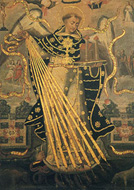

|  |
|---|
[86670] In Symbolum Apostolorum, pr. Primum quod est necessarium Christiano, est fides, sine qua nullus dicitur fidelis Christianus. Fides autem facit quatuor bona. Primum est quod per fidem anima coniungitur Deo: nam per fidem anima Christiana facit quasi quoddam matrimonium cum Deo: Oseae II, 20: sponsabo te mihi in fide. Et inde est quod quando homo baptizatur, primo confitetur fidem, cum dicitur ei, credis in Deum?: Quia Baptismus est primum sacramentum fidei. Et ideo dicit dominus, Marc. ult., 16: qui crediderit et baptizatus fuerit, salvus erit. Baptismus enim sine fide non prodest. Et ideo sciendum est, quod nullus est acceptus Deo sine fide: Hebr. XI, 6: sine fide autem impossibile est placere Deo. Et ideo dicit Augustinus super illud Rom. XIV, 23: omne autem quod non est ex fide, peccatum est: ubi non est aeternae et incommutabilis veritatis agnitio, falsa est virtus etiam in optimis moribus. Secundo, quia per fidem inchoatur in nobis vita aeterna: nam vita aeterna nihil aliud est quam cognoscere Deum: unde dicit dominus, Ioan. XVII, 3: haec est vita aeterna, ut cognoscant te solum verum Deum. Haec autem cognitio Dei incipit hic per fidem, sed perficitur in vita futura, in qua cognoscemus eum sicuti est: et ideo dicitur Hebr. XI, 1: fides est substantia sperandarum rerum. Nullus ergo potest pervenire ad beatitudinem, quae est vera cognitio Dei, nisi primo cognoscat per fidem: Ioan. XX, 29: beati qui non viderunt et crediderunt. Tertio, quia fides dirigit vitam praesentem: nam ad hoc quod homo bene vivat, oportet quod sciat necessaria ad bene vivendum: et si deberet omnia necessaria ad bene vivendum per studium addiscere: vel non posset pervenire, vel post longum tempus. Fides autem docet omnia necessaria ad bene vivendum. Ipsa enim docet quod est unus Deus, qui est remunerator bonorum et punitor malorum; et quod est alia vita, et huiusmodi: quibus satis allicimur ad bonum, et vitamus malum: Habac. II, 4: iustus meus ex fide vivit. Et hoc patet, quia nullus philosophorum ante adventum Christi cum toto conatu suo potuit tantum scire de Deo et de necessariis ad vitam aeternam, quantum post adventum Christi scit una vetula per fidem: et ideo dicitur Isai. XI, 9: repleta est terra scientia domini. Quarto, quia fides est qua vincimus tentationes: Hebr. XI, 33: sancti per fidem vicerunt regna. Et hoc patet, quia omnis tentatio vel est a Diabolo, vel a mundo, vel a carne. Diabolus enim tentat ut non obedias Deo nec subiiciaris ei. Et hoc per fidem removetur. Nam per fidem cognoscimus quod ipse est dominus omnium, et ideo sibi est obediendum: I Petr. V, 8: adversarius vester Diabolus circuit quaerens quem devoret: cui resistite fortes in fide. Mundus autem tentat vel alliciendo prosperis, vel terrendo adversis. Sed haec vincimus per fidem, quae facit nos credere aliam vitam meliorem ista: et ideo prospera mundi huius despicimus, et non formidamus adversa: I Ioan. V, 4: haec est victoria quae vincit mundum, fides nostra: et etiam quia docet nos credere alia maiora mala, scilicet Inferni. Caro vero tentat inducendo nos ad delectationes vitae praesentis momentaneas. Sed fides ostendit nobis quod per has, si eis indebite adhaeremus, aeternas delectationes amittimus: Ephes. VI, 16: in omnibus sumentes scutum fidei. Sic ergo patet quod multum est utile habere fidem. Sed dicit aliquis: stultum est credere quod non videtur, nec sunt credenda quae non videntur. Respondeo. Dicendum, quod hoc dubium primo tollit imperfectio intellectus nostri: nam si homo posset perfecte per se cognoscere omnia visibilia et invisibilia, stultum esset credere quae non videmus; sed cognitio nostra est adeo debilis quod nullus philosophus potuit unquam perfecte investigare naturam unius muscae: unde legitur, quod unus philosophus fuit triginta annis in solitudine, ut cognosceret naturam apis. Si ergo intellectus noster est ita debilis, nonne stultum est nolle credere de Deo, nisi illa tantum quae homo potest cognoscere per se? Et ideo contra hoc dicitur Iob XXXVI, 26: ecce Deus magnus, vincens scientiam nostram. Secundo potest responderi, quia dato quod aliquis magister aliquid diceret in sua scientia, et aliquis rusticus diceret non esse sicut magister doceret, eo quod ipse non intelligeret, multum reputaretur stultus ille rusticus. Constat autem quod intellectus Angeli excedit magis intellectum optimi philosophi, quam intellectus optimi philosophi intellectum rustici. Et ideo stultus est philosophus si nolit credere ea quae Angeli dicunt; et multo magis si nolit credere ea quae Deus dicit. Et contra hoc dicitur Eccli. III, 25: plurima supra sensum hominum ostensa sunt tibi. Tertio responderi potest, quia si homo nollet credere nisi ea quae cognosceret, certe non posset vivere in hoc mundo. Quomodo enim aliquis vivere posset nisi crederet alicui? Quomodo etiam crederet quod talis esset pater suus? Et ideo est necesse quod homo credat alicui de iis quae perfecte non potest scire per se. Sed nulli est credendum sicut Deo: et ideo illi qui non credunt dictis fidei, non sunt sapientes, sed stulti et superbi, sicut dicit apostolus I ad Tim. VI, 4: superbus est, nihil sciens. Propterea dicebat II Tim. I, 12: scio cui credidi et certus sum. Eccli. II, 8: qui timetis Deum, credite illi. Quare potest etiam responderi, quia Deus probat quod ea quae docet fides, sunt vera. Si enim rex mitteret litteras cum sigillo suo sigillatas, nullus auderet dicere quod illae litterae non processissent de regis voluntate. Constat autem quod omnia quae sancti crediderunt et tradiderunt nobis de fide Christi, signata sunt sigillo Dei: quod sigillum ostendunt illa opera quae nulla pura creatura facere potest: et haec sunt miracula, quibus Christus confirmavit dicta apostolorum et sanctorum. Si dicas, quod miracula nullus vidit fieri: respondeo ad hoc. Constat enim quod totus mundus colebat idola, et fidem Christi persequebatur, sicut Paganorum etiam historiae tradunt; sed modo omnes conversi sunt ad Christum, et sapientes et nobiles et divites et potentes et magni ad praedicationem simplicium et pauperum et paucorum praedicantium Christum. Aut ergo hoc est miraculose factum, aut non. Si miraculose, habes propositum. Si non, dico quod non potuit esse maius miraculum quam quod mundus totus sine miraculis converteretur. Non ergo quaerimus aliud. Sic ergo nullus debet dubitare de fide, sed credere ea quae fidei sunt magis quam ea quae videt: quia visus hominis potest decipi, sed Dei scientia nunquam fallitur.
[86672] In Symbolum Apostolorum, a. 1 Inter omnia quae debent credere fideles, hoc est primum quod debent credere, scilicet quod sit unus Deus. Considerandum autem, quid significet hoc nomen Deus: quod quidem nihil est aliud quam gubernator et provisor rerum omnium. Ille igitur credit Deum esse qui credit omnes res mundi huius gubernari et provideri ab illo. Qui autem credit quod omnia proveniant a casu, hic non credit Deum esse. Nullus autem invenitur adeo stultus qui non credat quod res naturales gubernentur, provideantur, et disponantur; cum in quodam ordine et certis temporibus procedant. Videmus enim solem et lunam et stellas, et alias res naturales omnes servare determinatum cursum; quod non contingeret, si a casu essent: unde si aliquis esset qui non crederet Deum esse, stultus esset. Psal. XIII, 1: dixit insipiens in corde suo: non est Deus. Sunt autem aliqui qui licet credant Deum gubernare et disponere res naturales, non tamen credunt Deum esse humanorum actuum provisorem; qui scilicet credunt actus humanos non disponi a Deo. Cuius ratio est, quia vident in mundo isto bonos affligi, et malos prosperari: quod videtur tollere providentiam divinam circa homines: unde in persona eorum dicitur Iob XXII, 14: circa cardines caeli perambulat, nec nostra considerat. Hoc autem est valde stultum. Nam istis accidit, sicut si aliquis nesciens medicinam, videret medicum propinantem uni infirmo aquam, alteri vinum, secundum scilicet quod ars medicinae dictat: crederet quod hoc fiat a casu, cum nesciat artem medicinae, quae ex iusta causa hoc facit, scilicet quod isti dat vinum, illi vero aquam. Sic est de Deo. Deus enim ex iusta causa et sua providentia disponit ea quae sunt hominibus necessaria; et sic quosdam bonos affligit, et quosdam malos in prosperitate dimittit. Unde qui credit hoc provenire a casu, est et reputatur insipiens: quia non contingit hoc, nisi quia nescit artem et causam dispositionis divinae. Iob XI, 6: ut ostenderet tibi secreta sapientiae, et quod multiplex esset lex eius. Et ideo firmiter credendum est, quod Deus gubernat et disponit non solum res naturales, sed etiam actus humanos. Psal. XCIII, 7, 8 et 9: et dixerunt, non videbit dominus, nec intelliget Deus Iacob. Intelligite insipientes in populo, et stulti aliquando sapite. Qui plantavit aurem, non audiet; aut qui finxit oculum, non considerat? (...) V. 10. Dominus scit cogitationes hominum. Omnia ergo videt, et cogitationes, et occulta voluntatis. Unde et hominibus specialiter imponitur necessitas bene faciendi, quia omnia quae cogitant et faciunt, divino conspectui sunt manifesta, apostolus Hebr. IV, 13: omnia nuda sunt et aperta oculis eius. Est autem credendum, quod hic Deus qui omnia disponit et regit, sit unus Deus tantum. Cuius ratio est, quia illa dispositio rerum humanarum est bene disposita, in qua multitudo invenitur disponi et gubernari per unum. Nam multitudo praesidentium inducit saepe dissensionem in subditis: unde cum divinum regimen praeeminet regimini humano, manifestum est quod regnum mundi non est per multos deos, sed per unum tantum. Sunt autem quatuor, ex quibus homines inducti sunt ad ponendum plures deos. Primum est imbecillitas intellectus humani. Nam homines imbecillis intellectus non valentes corporalia transcendere, non crediderunt aliquid esse ultra naturam corporum sensibilium; et ideo inter corpora illa posuerunt praeeminere et disponere mundum, quae pulchriora et digniora inter ea videbantur, et eis attribuebant et impendebant divinum cultum: et huiusmodi sunt corpora caelestia, scilicet sol et luna et stellae. Sed istis accidit sicut alicui eunti ad curiam regis, qui volens videre regem, credit quemcumque bene indutum vel in officio constitutum, regem esse: de quibus dicitur Sap. XIII, 2: solem et lunam, aut gyrum stellarum rectores orbis terrarum deos putaverunt; Isai. LI, 6: levate in excelsum oculos vestros, et videte sub terra deorsum: quia caeli sicut fumus liquescent, et terra sicut vestimentum atteretur, et habitatores eius sicut haec interibunt; salus autem mea in sempiternum erit, et iustitia mea non deficiet. Secundo provenit ex adulatione hominum. Nam aliqui volentes adulari dominis et regibus, honorem Deo debitum eis exhibuerunt, obediendo eis, et subiiciendo se eis: unde et aliquos post mortem fecerunt deos, alios etiam in vita dixerunt deos. Iudith V, 29: sciat omnis gens, quomodo Nabuchodonosor Deus terrae est, et praeter ipsum alius non est. Tertio provenit ex carnali affectu ad filios et consanguineos: nam aliqui propter nimium amorem quem ad suos habebant, faciebant statuas post eorum mortem, et sic ex hoc processum est quod illis statuis divinum cultum impendebant: de quibus dicitur Sap. XIV, 21: quoniam aut effectui aut regibus deservientes homines, incommunicabile nomen lapidibus et lignis imposuerunt. Quarto ex malitia Diaboli. Ipse enim ab initio voluit aequiparari Deo: unde ipse ait, Isai. XIV, 13-14: ponam sedem meam ab Aquilone, in caelum conscendam, et ero similis altissimo. Et hanc voluntatem nondum deposuit; et ideo totus conatus suus in hoc existit ut faciat se ab hominibus adorari, et sacrificia sibi offerri: non quod delectetur in uno cane vel Cato qui ei offertur, sed delectatur in hoc quod ei impendatur reverentia sicut Deo: unde et Christo dixit, Matth. IV, 9: haec omnia tibi dabo, si cadens adoraveris me. Inde est etiam quod intrantes idola, dabant responsa, ut scilicet venerarentur ut dii. Psalm. XCV, 5: omnes dii gentium Daemonia; apostolus, I Cor. X, 20: sed quae immolant gentes, Daemoniis immolant, et non Deo. Licet autem haec sint horribilia, sunt tamen aliquando et multi qui frequenter incidunt in istas quatuor causas. Et licet non ore aut corde, tamen factis ostendunt se credere plures deos. Nam qui credunt quod corpora caelestia possunt in voluntatem hominis imprimere, et qui in factis suis certa accipiunt tempora, ii ponunt corpora caelestia esse deos, et aliis dominari, facientes astrolabia. Ierem. X, 2: a signis caeli nolite metuere quae timent gentes, quia leges populorum vanae sunt. Item omnes illi qui obediunt regibus plusquam Deo, vel in illis in quibus non debent, constituunt eos deos suos. Act. V, 29: obedire oportet Deo magis quam hominibus. Item illi qui diligunt filios aut consanguineos plusquam Deum, ostendunt factis suis plures esse deos. Vel etiam illi qui diligunt escam plusquam Deum: de quibus apostolus Phil. III, 19: quorum Deus venter est. Item omnes illi qui insistunt veneficiis et incantationibus, credunt Daemones esse deos: cuius ratio est, quia petunt a Daemonibus id quod solus Deus dare potest, scilicet revelationem alicuius rei occultae, et veritatem futurorum. Est ergo primo credendum quod Deus est unus tantum. Sicut dictum est, primum quod credere debemus, est quod sit unus solus Deus; secundum est quod iste Deus sit creator et factor caeli et terrae, visibilium et invisibilium. Et ut rationes subtiles dimittantur ad praesens; quodam rudi exemplo manifestatur propositum, quod scilicet omnia sunt a Deo creata et facta. Constat enim quod si aliquis intraret domum aliquam, et in ipsius domus introitu sentiret calorem, postmodum vadens interius sentiret maiorem calorem, et sic deinceps, crederet ignem esse interius, etiam si ipsum ignem non videret qui causaret dictos calores: sic quoque contingit consideranti res huius mundi. Nam ipse invenit res omnes secundum diversos gradus pulchritudinis et nobilitatis esse dispositas; et quanto magis appropinquant Deo, tanto pulchriora et meliora invenit. Unde corpora caelestia pulchriora et nobiliora sunt quam corpora inferiora, et invisibilia visibilibus. Et ideo credendum est quod omnia haec sunt ab uno Deo, qui dat suum esse singulis rebus, et nobilitatem. Sap. XIII, 1: vani sunt autem omnes homines in quibus non subest scientia Dei, et de his quae videntur bona, non potuerunt intelligere eum qui est, neque operibus attendentes, agnoverunt quis esset artifex; et infra, 5: a magnitudine enim speciei et creaturae cognoscibiliter poterit creator horum videri. Sic ergo pro certo debet nobis constare quod omnia quae sunt in mundo, a Deo sunt. Circa hoc autem debemus vitare tres errores. Primus est error Manichaeorum, qui dicunt quod omnia visibilia creata sunt a Diabolo; et ideo Deo solum attribuunt creationem invisibilium. Et causa huius erroris est, quia ipsi Deum asserunt summum bonum, sicut et verum est, et omnia quae a bono sunt, bona esse: unde nescientes discernere quid sit malum et quid bonum, crediderunt quod omnia illa quae sunt aliqualiter mala, simpliciter essent mala; sicut ignis, quia urit, dicitur ab eis simpliciter malus; et aqua, quia suffocat; et sic de aliis. Unde, quia nihil istorum sensibilium est simpliciter bonum, sed aliqualiter malum et deficiens, dixerunt, quod visibilia omnia non sunt facta a Deo bono, sed a malo. Contra hos ponit Augustinus tale exemplum. Si aliquis intraret domum fabri, et inveniret instrumenta ad quae impingeret, et laederent eum, et ex hoc reputaret illum fabrum malum, quia tenet talia instrumenta, stultus esset, cum faber ea teneat ad opus suum. Ita stultum est dicere, quod per hoc creaturae sint malae, quia sunt in aliquo nocivae; nam quod uni est nocivum, alteri est utile. Hic autem error est contra fidem Ecclesiae; et ideo ad hunc removendum, dicitur: visibilium omnium et invisibilium Gen. I, 1: in principio creavit Deus caelum et terram. Ioan. I, 3: omnia per ipsum facta sunt. Secundus est error ponentium mundum ab aeterno: secundum quem modum loquitur Petrus dicens (II Petr. III, 4): ex quo patres dormierunt, omnia sic perseverant ab initio creaturae. Et isti ducti sunt ad hanc positionem, quia nescierunt considerare principium mundi. Unde, sicut Rabbi Moyses dicit, istis contingit sicut puero, qui si statim cum nascitur, poneretur in insula, et nunquam videret mulierem praegnantem, nec puerum nasci; et diceretur isti puero, quando magnus esset, qualiter homo concipitur, portatur in utero, et nascitur; nulli crederet sibi dicenti, quia impossibile sibi videretur quod homo posset esse in utero matris. Sic isti considerantes statum mundi praesentem, non credunt quod inceperit. Est etiam hoc contra fidem Ecclesiae: et ideo ad hoc removendum dicitur: factorem caeli et terrae. Si enim fuerunt facta, constat quod non semper fuerunt; et ideo dicitur in Psal. CXLVIII, 5: dixit et facta sunt. Tertius est error ponentium Deum fecisse mundum ex praeiacenti materia. Et ad hoc ducti sunt, quia voluerunt metiri potentiam Dei secundum potentiam nostram: et ideo, quia homo nihil potest facere nisi ex praeiacenti materia, crediderunt quod eodem modo et Deus: unde dixerunt, quod in productione rerum habuit materiam praeiacentem. Sed hoc non est verum. Nam homo ideo nihil potest facere sine praeiacenti materia, quia est factor particularis, et non potest inducere nisi hanc formam in determinata materia ab aliquo alio praesupposita. Cuius ratio est, quia virtus sua est determinata ad formam tantum; et ideo non potest esse causa nisi huius. Deus autem est universalis causa omnium rerum, et non solum creat formam, sed etiam materiam; unde et de nihilo omnia fecit. Et ideo ad removendum hunc errorem dicitur: creatorem caeli et terrae. In hoc enim differunt creare et facere, quia creare est de nihilo aliquid facere: facere autem est de aliquo aliquid facere. Si ergo ex nihilo fecit, credendum est quod iterum posset omnia facere, si destruerentur: unde potest caecum illuminare, mortuum suscitare, et cetera opera miraculosa facere. Sap. XII, 18: subest enim tibi, cum volueris, posse. Ex huiusmodi autem consideratione homo dirigitur ad quinque. Primo ad cognitionem divinae maiestatis. Nam factor praeeminet factis: unde quia Deus est factor omnium rerum, constat eum eminentiorem omnibus rebus. Sap. XIII, 3: quorum si specie delectati deos putaverunt, sciant quanto his dominator eorum speciosior est (...) ib. 4: aut si virtutem et opera eorum mirati sunt, intelligant ab illis quomodo qui haec fecit, fortior est illis. Et inde est quod quidquid potest intelligi vel cogitari, minus est ipso Deo. Iob XXXVI, 26: ecce Deus magnus, vincens scientiam nostram. Secundo ex hoc dirigitur ad gratiarum actionem: quia enim Deus est creator omnium rerum, certum est quod quidquid sumus et quidquid habemus, a Deo est. Apostolus, I Cor. IV, 7: quid habes quod non accepisti? Psal. XXIII, 1: domini est terra et plenitudo eius, orbis terrarum, et universi qui habitant in eo. Et ideo debemus ei reddere gratiarum actiones: Psal. CXV, 12: quid retribuam domino pro omnibus quae retribuit mihi? Tertio inducitur ad patientiam in adversis. Nam licet omnis creatura sit a Deo, et ex hoc sit bona secundum suam naturam; tamen si in aliquo noceat, et inferat nobis poenam, debemus credere quod illa poena sit a Deo; non tamen culpa: quia nullum malum est a Deo, nisi quod ordinatur ad bonum. Et ideo si omnis poena quam homo suffert est a Deo, debet patienter sustinere. Nam poenae purgant peccata, humiliant reos, provocant bonos ad amorem Dei. Iob II, 10: si bona suscepimus de manu domini, mala autem quare non sustineamus? Quarto inducimur ad recte utendum rebus creatis: nam creaturis debemus uti ad hoc ad quod factae sunt a Deo. Sunt autem factae ad duo: scilicet ad gloriam Dei, quia universa propter semetipsum (id est ad gloriam suam) operatus est dominus, ut dicitur Prov. XVI, 4, et ad utilitatem nostram: Deut. IV, 19: quae fecit dominus Deus tuus in ministerium cunctis gentibus. Debemus ergo uti rebus ad gloriam Dei, ut scilicet in hoc placeamus Deo; et ad utilitatem nostram, ut scilicet ipsis utendo, non committamus peccatum. I Paralip. XXIX, 14: tua sunt omnia, et quae de manu tua accepimus dedimus tibi. Quidquid ergo habes, sive scientiam, sive pulchritudinem, totum debes referre, et uti eo ad gloriam Dei. Quinto ducimur ex hoc in cognitionem dignitatis humanae. Deus enim omnia facit propter hominem, sicut dicitur in Psal. VIII, 8: omnia subiecisti sub pedibus eius. Et homo magis est similis Deo inter creaturas post Angelos: unde dicitur Genes. I, 26: faciamus hominem ad imaginem et similitudinem nostram. Hoc quidem non dixit de caelo sive de stellis, sed de homine. Non autem quantum ad corpus, sed quantum ad animam, quae est liberam voluntatem habens et incorruptibilis, in quo magis assimilatur Deo quam ceterae creaturae. Debemus ergo considerare hominem post Angelos digniorem esse ceteris creaturis, et nullo modo dignitatem nostram diminuere propter peccata et propter inordinatum appetitum rerum corporalium, quae viliores sunt nobis, et ad servitium nostrum factae; sed eo modo debemus nos habere quo Deus fecit nos. Deus enim fecit hominem ut praeesset omnibus quae sunt in terra, et ut subsit Deo. Debemus ergo dominari et praeesse rebus; Deo autem subesse, obedire, ac servire: et ex hoc perveniemus in fruitionem Dei: quod nobis praestare et cetera.
[86674] In Symbolum Apostolorum, a. 2 Non solum est necesse Christianis unum Deum credere, et hunc esse creatorem caeli et terrae et omnium; sed etiam necesse est ut credant quod Deus est pater, et quod Christus sit verus filius Dei. Hoc autem, sicut dicit beatus Petrus in canonica sua II, cap. I, non est fabulosum, sed certum et probatum per verbum Dei in monte: unde dicit ibidem, XVI, 18: non enim doctas fabulas secuti, notam facimus vobis domini nostri Iesu Christi virtutem et praesentiam; sed speculatores facti illius magnitudinis. Accipiens enim a Deo patre honorem et gloriam, voce delapsa ad eum huiuscemodi a magnifica gloria: hic est filius meus dilectus, in quo mihi complacui: ipsum audite. Et hanc vocem nos audivimus de caelo allatam, cum essemus cum ipso in monte sancto. Ipse etiam Christus Iesus in pluribus locis vocat Deum patrem suum, et se dicit filium Dei: et apostoli et sancti patres posuerunt inter articulos fidei quod Christus est filius Dei, dicentes: et in Iesum Christum filium eius, scilicet Dei. Supple, credo. Sed aliqui haeretici fuerunt qui hoc perverse crediderunt. Photinus enim dicit, quod Christus non est aliter filius Dei quam boni viri, qui bene vivendo merentur dici filii Dei per adoptionem, faciendo Dei voluntatem; et ita Christus qui bene vixit et fecit Dei voluntatem, meruit dici filius Dei: et voluit quod Christus non fuerit ante beatam virginem, sed tunc incepit quando ex ea conceptus est. Et sic in duobus erravit. Primo in hoc quod non dixit eum verum filium Dei secundum naturam; secundo quod dixit, eum secundum totum suum esse ex tempore incepisse; cum fides nostra teneat quod filius sit Dei per naturam, et quod ab aeterno sit: et de his habemus expressas auctoritates contra eum in sacra Scriptura. Nam contra primum dicitur, quod sit non filius solum, sed etiam unigenitus. Ioan. I, 18: unigenitus qui est in sinu patris, ipse enarravit. Contra secundum, Ioan. VIII, 58: antequam Abraham fieret, ego sum. Constat autem quod Abraham ante beatam virginem fuit: et ideo sancti patres addiderunt in alio symbolo contra primum, filium Dei unigenitum; contra secundum, et ex patre natum ante omnia saecula. Sabellius vero licet diceret quod Christus fuit ante beatam virginem, dixit tamen quod non est alia persona patris, alia filii, sed ipse pater est incarnatus; et ideo eadem est persona patris et filii. Sed hoc est erroneum, quia aufert Trinitatem personarum: et contra hoc est auctoritas Ioan. VIII, 16: solus non sum; sed ego, et qui misit me, pater. Constat autem nullum a se mitti. Sic ergo mentitur Sabellius: et ideo in symbolo patrum additur: Deum de Deo, lumen de lumine; idest, Deum filium de Deo patre, et filium qui est lumen, de lumine patre esse, credere debemus. Arius autem licet diceret quod Christus fuerit ante beatam virginem, et quod alia fuerit persona patris, alia filii, tamen tria attribuit Christo. Primum est quod filius Dei fuit creatura; secundum est quod non ab aeterno, sed ex tempore factus sit a Deo nobilissima creaturarum; tertium est quod non fuerit unius naturae Deus filius cum Deo patre, et sic quod non fuerit verus Deus. Sed hoc similiter est erroneum, et contra auctoritates sacrae Scripturae. Dicitur enim Ioan. X, 30: ego et pater unum sumus, scilicet in natura; et ideo sicut pater fuit semper, ita et filius; et sicut pater est verus Deus, ita et filius. Ubi ergo dicitur ab Ario, Christum fuisse creaturam, e contra dicitur in symbolo a patribus, Deum verum de Deo vero; ubi autem dicitur eum non fuisse ab aeterno, sed ex tempore, e contra in symbolo dicitur, genitum, non factum; contra illud vero quod dicitur eum non esse eiusdem substantiae cum patre, additur in symbolo, consubstantialem patri. Patet ergo quod credere debemus, quod Christus unigenitus Dei est, et vere filius Dei, et quod semper fuerit cum patre, et quod alia est persona filii, alia patris, et quod unius est naturae cum patre. Sed hoc credimus hic per fidem, cognoscemus autem in vita aeterna per perfectam visionem. Et ideo ad consolationem nostram dicemus aliquid de his. Sciendum est igitur, quod diversa diversum modum generationis habent. Generatio autem Dei alia est quam generatio aliarum rerum: unde non possumus attingere ad generationem Dei, nisi per generationem eius quod in creaturis magis accedit ad similitudinem Dei. Nihil est autem Deo ita simile sicut anima hominis, ut dictum est. Modus autem generationis in anima est quia homo cogitat per animam suam aliquid, quod vocatur conceptio intellectus; et huiusmodi conceptio oritur ex anima, sicut ex patre, et vocatur verbum intellectus, sive hominis. Anima igitur cogitando generat verbum suum. Sic et filius Dei nihil est aliud quam verbum Dei; non sicut verbum exterius prolatum, quia illud transit, sed sicut verbum interius conceptum: et ideo ipsum verbum Dei est unius naturae cum Deo, et aequale Deo. Unde et beatus Ioannes de verbo Dei loquens, tres haereses destruxit. Primo haeresim Photini, quae tacta est, cum dicit: in principio erat verbum; secundo Sabellii, cum dicit, et verbum erat apud Deum; tertio Arii, cum dicit, et Deus erat verbum. Verbum autem aliter est in nobis, et aliter in Deo. In nobis enim verbum nostrum est accidens; sed in Deo verbum Dei est idem quod ipse Deus, cum nihil sit in Deo quod non sit essentia Dei. Nullus autem potest dicere quod Deus non habeat verbum, quia contingeret Deum esse insipientissimum: et ideo sicut fuit semper Deus, ita et verbum eius. Sicut autem artifex facit omnia per formam quam praecogitavit in corde suo, quod est verbum eius; ita et Deus omnia facit verbo suo, sicut per artem suam. Ioan. I, 3: omnia per ipsum facta sunt. Si ergo verbum Dei est filius Dei, et omnia Dei verba sunt similitudo quaedam istius verbi; debemus primo libenter audire verba Dei: hoc est enim signum quod diligamus Deum, si verba illius libenter audimus. Secundo debemus credere verbis Dei, quia ex hoc verbum Dei habitat in nobis, idest Christus, qui est verbum Dei, apostolus, Ephes. III, 17: habitare Christum per fidem in cordibus vestris. Ioan. V, 38: verbum Dei non habetis in vobis manens. Tertio oportet quod verbum Dei in nobis manens continue meditemur; quia non solum oportet credere, sed meditari; aliter non prodesset; et huiusmodi meditatio valet multum contra peccatum. Psal. CXVIII, 11: in corde meo abscondi eloquia tua, ut non peccem tibi; et iterum de viro iusto dicitur Psal. I, 2: in lege eius meditabitur die ac nocte. Unde de beata virgine dicitur Luc. II, 51, quod conservabat omnia verba haec conferens in corde suo. Quarto oportet quod homo verbum Dei communicet aliis, commonendo, praedicando, et inflammando. Apostolus, Ephes. IV, 29: omnis sermo malus ex ore vestro non procedat, sed si quis bonus ad aedificationem. Idem, Colos. III, 16: verbum Christi habitet in vobis abundanter, in omni sapientia, docentes et commonentes vosmetipsos. Idem, I Tim. IV, 2: praedica verbum, insta opportune, importune, argue, obsecra, increpa in omni patientia et doctrina. Ultimo verbum Dei debet executioni mandari. Iac. I, 22: estote factores verbi, et non auditores tantum, fallentes vosmetipsos. Ista quinque servavit per ordinem beata Maria in generatione verbi Dei ex se. Primo enim audivit: spiritus sanctus superveniet in te, Luc. II, 35, secundo consensit per fidem: ecce ancilla domini, ibid. 38, tertio tenuit et portavit in utero, quarto protulit et peperit eum, quinto nutrivit et lactavit eum; unde Ecclesia cantat: ipsum regem Angelorum sola virgo lactabat ubere de caelo pleno.
[86676] In Symbolum Apostolorum, a. 3 Non solum est necessarium credere Christiano filium Dei, ut ostensum est; sed etiam oportet credere incarnationem eius. Et ideo beatus Ioannes postquam dixerat multa subtilia et ardua, consequenter insinuat nobis eius incarnationem, cum dicit: et verbum caro factum est. Et ut de hoc aliquid capere possimus, duo exempla ponam in medium. Constat quod filio Dei nihil est ita simile sicut verbum in corde nostro conceptum, non prolatum. Nullus autem cognoscit verbum dum est in corde hominis, nisi ille qui concipit; sed tunc primo cognoscitur cum profertur. Sic verbum Dei dum erat in corde patris non cognoscebatur nisi a patre tantum: sed carne indutum, sicut verbum voce, tunc primo manifestatum et cognitum est. Bar. III, 38: post hoc in terris visus est, et cum hominibus conversatus est. Aliud exemplum est, quia licet verbum prolatum cognoscatur per auditum, tamen non videtur nec tangitur; sed cum scribitur in charta, tunc videtur et tangitur. Sic et verbum Dei et visibile et tangibile factum est, cum in carne nostra fuit quasi scriptum: et sicut charta in qua verbum regis scriptum est, dicitur verbum regis; ita homo cui coniunctum est verbum Dei in una hypostasi, dicitur filius Dei. Isai. VIII, 1: sume tibi librum grandem, et scribe in eo stylo hominis; et ideo sancti apostoli dixerunt: qui conceptus est de spiritu sancto, natus ex Maria virgine. In quo quidem multi erraverunt: unde et sancti patres in alio symbolo, in synodo Nicaena, multa addiderunt, per quae nunc omnes errores destruuntur. Origenes enim dixit, quod Christus est natus, et etiam venit in mundum, ut etiam salvaret Daemones: unde dixit Daemones omnes esse salvandos in fine mundi. Sed hoc est contra sacram Scripturam. Dicit enim Matth. XXV, 41: discedite a me maledicti in ignem aeternum, qui paratus est Diabolo et Angelis eius. Et ideo ad hoc removendum additur: qui propter nos homines (non propter Daemones) et propter nostram salutem. In quo quidem magis apparet amor Dei ad nos. Photinus vero voluit quod Christus natus esset de beata virgine; sed addidit quod esset purus homo, qui bene vivendo et faciendo voluntatem Dei, meruit filius Dei fieri, sicut et alii sancti: contra quod dicitur Ioan. VI, 38: descendi de caelo, non ut faciam voluntatem meam, sed voluntatem eius qui misit me. Constat autem quod non descendisset nisi ibi fuisset; et si fuisset purus homo, non fuisset in caelo: et ideo ad hoc removendum additur: descendit de caelis. Manichaeus vero dixit, quod, licet filius Dei fuerit semper, et descenderit de caelo, tamen non habuit veram carnem, sed apparentem. Sed hoc est falsum: non enim decebat doctorem veritatis aliquam falsitatem habere: et ideo sicut ostendit veram carnem, sic habuit. Unde dixit, Luc. XXIV, 39: palpate, et videte, quia spiritus carnem et ossa non habet, sicut me videtis habere. Et ideo ad hoc removendum addiderunt: et incarnatus est. Ebion vero, qui fuit genere Iudaeus, dixit quod Christus natus est de beata virgine, sed ex commixtione viri, et ex virili semine. Sed hoc est falsum, quia Angelus dixit, Matth. I, 20: quod enim in ea natum est de spiritu sancto est; et ideo sancti patres ad hoc removendum addiderunt: de spiritu sancto. Valentinus autem licet confiteretur quod Christus conceptus fuerit de spiritu sancto, voluit tamen quod spiritus sanctus portaverit unum corpus caeleste, et posuerit in beata virgine, et hoc fuit corpus Christi: unde nihil aliud operata est beata virgo, nisi quod fuit locus eius: unde dixit quod illud corpus transivit per beatam virginem sicut per aquaeductum. Sed hoc est falsum; nam Angelus dixit ei, Luc. I, 35: quod enim ex te nascetur sanctum, vocabitur filius Dei; et apostolus, Galat. IV, 4: at ubi venit plenitudo temporis, misit Deus filium suum factum ex muliere. Et ideo addiderunt: natus ex Maria virgine. Arius vero et Apollinarius dixerunt, quod, licet Christus fuerit verbum Dei, et natus ex Maria virgine, tamen non habuit animam, sed loco animae fuit ibi divinitas. Sed hoc est contra Scripturam; quia Christus dixit, Ioan. XII, 27: nunc anima mea turbata est; et iterum Matth. XXVI, 38: tristis est anima mea usque ad mortem. Et ideo sancti patres ad hoc removendum addiderunt: et homo factus est. Homo enim ex anima et corpore consistit: unde verissime habuit omnia quae homo habere potest praeter peccatum. In hoc autem quod dicitur homo factus, destruuntur omnes errores superius positi, et omnes alii qui dici possent; et praecipue error Eutychetis, qui dixit commixtionem factam, scilicet ex divina natura et humana factam unam naturam Christi, quae nec Deus pure est, nec purus homo. Sed est falsum, quia tunc non esset homo; et est etiam contra hoc quod dicitur, quod homo factus est. Destruitur etiam error Nestorii, qui dixit filium Dei unitum esse homini solum per inhabitationem. Sed hoc est falsum, quia tunc non esset homo, sed in homine: et quod sit homo, patet per apostolum, Philip. II, 7: et habitu inventus ut homo; Ioan. VIII, 40: quid quaeritis me interficere, hominem, qui veritatem vobis locutus sum, quam audivi a Deo? Possumus autem sumere ex his aliqua ad eruditionem. Primo enim confirmatur fides nostra. Si enim aliquis diceret aliqua de aliqua terra remota, et ipse non fuisset ibi, non crederetur ei sicut si ibi fuisset. Antequam ergo veniret Christus in mundum, patriarchae et prophetae et Ioannes Baptista dixerunt aliqua de Deo; sed tamen non ita crediderunt eis homines sicut Christo, qui fuit cum Deo, immo unum cum ipso. Unde multum firma est fides nostra ab ipso Christo nobis tradita. Ioan. I, 18: Deum nemo vidit unquam: unigenitus filius qui est in sinu patris, ipse enarravit. Et inde est quod multa fidei secreta sunt manifesta nobis post adventum Christi, quae ante occulta erant. Secundo ex iis elevatur spes nostra. Constat enim quod Dei filius non pro parvo ad nos venit, sumens carnem nostram, sed pro magna utilitate nostra; unde fecit quoddam commercium, scilicet quod assumpsit corpus animatum, et de virgine nasci dignatus est, ut nobis largiretur suam deitatem; et sic factus est homo, ut hominem faceret Deum. Rom. V, 2: per quem habemus accessum per fidem in gratiam istam, in qua stamus et gloriamur in spe gloriae filiorum Dei. Tertio ex hoc accenditur caritas. Nullum enim est tam evidens divinae caritatis indicium quam quod Deus creator omnium factus est creatura, dominus noster factus est frater noster, filius Dei factus est filius hominis. Ioan. III, 16: sic Deus dilexit mundum ut filium suum unigenitum daret. Et ideo ex huius consideratione amor reaccendi debet et inflammari ad Deum. Quarto inducimur ad servandam puram animam nostram. Intantum enim natura nostra fuit nobilitata et exaltata ex coniunctione ad Deum, quod fuit ad consortium divinae personae suscepta: unde Angelus post incarnationem noluit sustinere quod beatus Ioannes adoraret eum, quod ante sustinuerat etiam a maximis patriarchis. Ideo homo huius exaltationem recolens et attendens, debet dedignari vilificare se et naturam suam per peccatum: ideo dicit beatus Petrus: per quem maxima et pretiosa nobis promissa donavit, ut per haec efficiamur divinae consortes naturae, fugientes eius quae in mundo est concupiscentiae corruptionem. Quinto ex his inflammatur desiderium nostrum ad perveniendum ad Christum. Si enim aliquis rex esset frater alicuius, et esset remotus ab eo, desideraret ille cuius frater esset rex, ad eum venire, et apud eum esse et manere. Unde cum Christus sit frater noster, debemus desiderare esse cum eo et coniungi ei: Matth. XXIV, 28: ubicumque fuerit corpus, illuc congregabuntur et aquilae; et apostolus desiderium habebat dissolvi et esse cum Christo: quod quidem desiderium crescit in nobis considerando incarnationem eius.
[86678] In Symbolum Apostolorum, a. 4 Sicut necessarium est Christiano quod credat incarnationem filii Dei, ita necessarium est quod credat passionem eius et mortem: quia, sicut dicit Gregorius, nihil nobis nasci profuit, nisi redimi profuisset. Hoc autem, scilicet quod Christus pro nobis est mortuus, ita est arduum quod vix potest intellectus noster capere; immo nullo modo cadit in intellectu nostro. Et hoc est quod dicit apostolus, Act. XIII, 41: opus operor ego in diebus vestris, opus quod non credetis, si quis enarraverit vobis; et Habac. I, 5: opus factum est in diebus vestris quod nemo credet cum narrabitur. Tanta est enim gratia Dei et amor ad nos, quod plus ipse fecit nobis quam possumus intelligere. Non tamen debemus credere quod Christus ita sustinuerit mortem quod deitas mortua sit; sed quod humana natura in ipso mortua sit. Non enim mortuus est secundum quod Deus erat, sed secundum quod homo: et hoc patet per tria exempla. Unum est in nobis. Constat enim quod cum homo moritur, in separatione animae a corpore non moritur anima, sed ipsum corpus, seu caro. Sic et in morte Christi non est mortua divinitas, sed natura humana. Sed si Iudaei non occiderunt divinitatem, videtur quod non magis peccaverunt quam si occidissent unum alium hominem. Ad hoc est dicendum, quod dato quod rex esset indutus una veste, si quis inquinaret vestem illam, tantum reatum incurreret ac si ipsum regem inquinasset. Ideo Iudaei licet non possent Deum interficere, tamen humanam naturam a Christo assumptam occidentes, sunt tantum puniti ac si ipsam divinitatem occidissent. Item, sicut dictum est superius, filius Dei est verbum Dei, et verbum Dei incarnatum est sicut verbum regis scriptum in charta. Si igitur aliquis dilaniaret chartam regis, pro tanto habetur ac si dilaniaret verbum regis. Et ideo tanto habetur peccatum Iudaeorum ac si occidissent verbum Dei. Sed quae necessitas ut verbum Dei pateretur pro nobis? Magna: et potest colligi duplex necessitas. Una est ad remedium contra peccata, alia est ad exemplum quantum ad agenda. Ad remedium quidem, quia contra omnia mala quae incurrimus per peccatum, invenimus remedium per passionem Christi. Incurrimus autem quinque mala. Primo maculam: homo enim cum peccat, deturpat animam suam: quia sicut virtus animae est pulchritudo eius, ita peccatum est macula eius. Bar. III, 10: quid est, Israel, quod in terra inimicorum es (...) coinquinatus es cum mortuis? Sed hoc removet passio Christi: nam Christus sua passione fecit balneum in sanguine suo, quo peccatores lavaret. Apoc. I, 5: lavit nos a peccatis nostris in sanguine suo. Lavatur autem anima sanguine Christi in Baptismo, quia ex Christi sanguine virtutem habet regenerativam. Et ideo cum aliquis se inquinat per peccatum, facit Christo iniuriam, et magis peccat quam ante. Hebr. X, 28-29: irritam quis faciens legem Moysi, sine ulla miseratione duobus vel tribus testibus moritur; quanto magis putatis deteriora mereri supplicia qui filium Dei conculcaverit, et sanguinem testamenti pollutum duxerit? Secundo incurrimus offensam Dei. Nam sicut carnalis diligit carnalem pulchritudinem, ita Deus spiritualem, quae est pulchritudo animae. Quando ergo anima per peccatum inquinatur, Deus offenditur, et odio habet peccatorem. Sap. XIV, 9: odio sunt Deo impius et impietas eius. Sed Christi passio hoc removet, qui Deo patri satisfecit pro peccato, pro quo ipse homo satisfacere non poterat; cuius caritas fuit maior et obedientia quam peccatum primi hominis et praevaricatio. Rom. V, 10: cum inimici essemus (Deo), reconciliati sumus Deo per mortem filii eius. Tertio incurrimus infirmitatem. Nam homo semel peccando credit postmodum a peccato posse continere; sed totum contrarium accidit: quia per primum peccatum debilitatur, et fit pronior ad peccandum; et peccatum magis dominatur homini, et homo, quantum de se est, ponit se in tali statu ut non surgat, sicut qui in puteum se proiicit, nisi ex divina virtute. Unde postquam homo peccavit, natura nostra fuit debilitata et corrupta; et tunc homo fuit pronior ad peccandum. Sed Christus hanc infirmitatem et debilitatem diminuit, licet non totam deleverit; tamen ita est homo ex Christi passione confortatus, et peccatum debilitatum, quod non tantum dominatur ei; et potest homo conari adiutus gratia Dei, quae confertur in sacramentis, quae ex Christi passione efficaciam habent, ita quod potest resilire a peccatis. Apostolus, Rom. VI, 6: vetus homo noster simul crucifixus est, ut destruatur corpus peccati. Nam ante passionem Christi pauci inventi sunt sine peccato mortali viventes; sed post sine peccato mortali multi vixerunt et vivunt. Quarto incurrimus reatum poenae. Hoc enim exigit iustitia Dei, ut quicumque peccat, puniatur. Poena autem pensatur ex culpa. Unde cum culpa peccati mortalis sit infinita, utpote contra bonum infinitum, scilicet Deum, cuius praecepta peccator contemnit; poena debita peccato mortali est infinita. Sed Christus per suam passionem abstulit nobis poenam hanc, et sustinuit ipse. I Petr. II, 24: peccata nostra (idest poenam peccati) ipse pertulit in corpore suo. Nam passio Christi fuit tantae virtutis quod sufficit ad expiandum omnia peccata totius mundi, etiam si essent centum millia. Et inde est quod baptizati ab omnibus peccatis laxantur. Inde est etiam quod sacerdos peccata dimittit. Inde est etiam quod quicumque magis passioni Christi se conformat, maiorem consequitur veniam, et plus meretur de gratia. Quinto incurrimus exilium regni. Nam qui offendunt reges, exulare coguntur a regno. Sic et homo propter peccatum expellitur de Paradiso. Inde est quod Adam statim post peccatum est eiectus de Paradiso, et clausa est ianua Paradisi. Sed Christus sua passione ianuam illam aperuit, et ad regnum exules revocavit. Aperto enim latere Christi, aperta est ianua Paradisi; et fuso sanguine eius, deleta est macula, placatus est Deus, ablata est debilitas, expiata est poena, exules revocantur ad regnum. Et inde est quod statim latroni dicitur (Luc. XXIII, 43): hodie mecum eris in Paradiso. Hoc non est dictum olim: non enim dictum fuit alicui, non Adae, non Abrahae, non David; sed hodie, scilicet quando aperta est ianua, latro veniam petit et invenit. Hebr. X, 19: habentes (...) fiduciam in introitu sanctorum in sanguine Christi. Sic ergo patet utilitas ex parte remedii. Sed non minor est utilitas quantum ad exemplum. Nam, sicut dicit beatus Augustinus, passio Christi sufficit ad informandum totaliter vitam nostram. Quicumque enim vult perfecte vivere, nihil aliud faciat nisi quod contemnat quae Christus in cruce contempsit, et appetat quae Christus appetiit. Nullum enim exemplum virtutis abest a cruce. Si enim quaeras exemplum caritatis, maiorem caritatem nemo habet ut animam suam ponat quis pro amicis suis, Ioan. XV, 13. Et hoc in cruce fecit Christus. Et ideo si pro nobis animam suam dedit, non debet nobis esse grave quaecumque mala sustinere pro ipso. Psal. CXV, 12: quid retribuam domino pro omnibus quae retribuit mihi? Si quaeris exemplum patientiae, excellentissima in cruce invenitur. Patientia enim ex duobus magna ostenditur: aut cum quis magna patienter suffert, aut cum ea suffert quae vitare posset, et non vitat. Christus autem magna in cruce pertulit. Thren. I, 12: o vos omnes qui transitis per viam, attendite, et videte si est dolor sicut dolor meus; et patienter, quia, cum pateretur, non comminabatur, I Petr. II, 23; et Isai. LIII, 7: sicut ovis ad occisionem ducetur, et quasi agnus coram tondente se obmutescet. Item vitare potuit, et non vitavit. Matth. XXVI, 53: an putas quia non possum rogare patrem meum, et exhibebit mihi modo plusquam duodecim legiones Angelorum? Magna est ergo Christi patientia in cruce. Hebr. XII, 1-2: per patientiam curramus ad propositum nobis certamen, aspicientes in auctorem fidei et consummatorem Iesum, qui, proposito sibi gaudio sustinuit crucem confusione contempta. Si quaeris exemplum humilitatis, respice crucifixum: nam Deus iudicari voluit sub Pontio Pilato, et mori. Iob XXXVI, 17: causa tua quasi impii iudicata est. Vere impii: quia, morte turpissima condemnemus eum, Sap. II, 20. Dominus pro servo, et vita Angelorum pro homine mori voluit. Philip. II, 8: factus est obediens usque ad mortem. Si quaeris exemplum obedientiae, sequere eum qui factus est obediens patri usque ad mortem. Rom. V, 19: sicut per inobedientiam unius hominis peccatores constituti sunt multi: ita per unius obedientiam, iusti constituentur multi. Si quaeris exemplum contemnendi terrena, sequere eum qui est rex regum et dominus dominantium, in quo sunt thesauri sapientiae; in cruce tamen nudatum, illusum, consputum, caesum, spinis coronatum, et felle et aceto potatum, et mortuum. Igitur non afficiaris ad vestes, et ad divitias: quia diviserunt sibi vestimenta mea, Psal. XXI, 19; non ad honores, quia ego ludibria et verbera expertus sum; non ad dignitates, quia plectentes coronam de spinis imposuerunt capiti meo; non ad delicias, quia in siti mea potaverunt me aceto, Psal. LXVIII, 22. Augustinus super illud Hebr. XII: qui proposito sibi gaudio sustinuit crucem, confusione contempta, dicit: omnia bona terrena contempsit homo Christus Iesus ut contemnenda monstraret.
[86680] In Symbolum Apostolorum, a. 5 Sicut dictum est, mors Christi fuit in separatione animae a corpore, sicut et aliorum hominum; sed divinitas ita insolubiliter iuncta fuit homini Christo, quod licet anima et corpus separarentur ab invicem, ipsa tamen deitas perfectissime semper et animae et corpori affuit; et ideo in sepulcro cum corpore fuit filius Dei, et ad Inferos cum anima descendit. Sunt autem quatuor rationes quare Christus cum anima ad Infernum descendit. Prima ut sustineret totam poenam peccati, ut sic totam culpam expiaret. Poena autem peccati hominis non solum erat mors corporis, sed etiam erat poena in anima: quia etiam peccatum erat quantum ad animam, quia etiam ipsa anima puniebatur quantum ad carentiam visionis divinae: pro qua abolenda nondum satisfactum erat. Et ideo post mortem descendebant omnes, etiam sancti patres, ante Christi adventum, ad Infernum. Ut ergo Christus sustineret totam poenam peccatoribus debitam, voluit non solum mori, sed etiam secundum animam ad Infernum descendere. Unde Psal. LXXXVII, 4: aestimatus sum cum descendentibus in lacum: factus sum sicut homo sine adiutorio inter mortuos liber. Alii enim erant ibi ut servi, sed Christus ut liber. Secunda ratio est ut perfecte subveniret suis amicis omnibus. Habebat enim amicos suos non solum in mundo, sed etiam in Inferno. In hoc enim sunt aliqui amici Christi inquantum habent caritatem; in Inferno autem multi erant qui cum caritate et fide venturi decesserant, sicut Abraham, Isaac, Iacob, Moyses, David et alii iusti et perfecti viri. Et quia Christus suos visitaverat in mundo, et eis subvenerat per mortem suam, voluit etiam visitare suos qui erant in Inferno, et subvenire eis descendendo ad eos. Eccli. XXIV, 45: penetrabo omnes inferiores partes terrae, et inspiciam omnes dormientes, et illuminabo omnes sperantes in domino. Tertia vero ratio est ut perfecte de Diabolo triumpharet. Tunc enim perfecte triumphat aliquis de aliquo, quando non solum vincit eum in campo, sed etiam invadit eum usque in domum propriam, et aufert ei sedem regni et domum suam. Christus autem triumphaverat contra Diabolum, et in cruce vicerat eum: unde ait Ioan. XII, 31: nunc iudicium est mundi, nunc princeps huius mundi (scilicet Diabolus) eiicietur foras. Et ideo ut perfecte triumpharet, voluit auferre sedem regni sui, et ligare eum in domo sua quae est Infernus. Et ideo descendit illuc, et diripuit omnia sua, et ligavit eum, et abstulit ei praedam suam. Coloss. II, 15: expolians principatus et potestates, traduxit confidenter, palam triumphans illos in semetipso. Similiter etiam quia potestatem et possessionem acceperat Christus caeli et terrae, voluit etiam possessionem accipere Inferni, ut sic, secundum apostolum ad Philip. II, 10: in nomine Iesu omne genuflectatur, caelestium, terrestrium et Infernorum; Marc., ult. 17: in nomine meo Daemonia eiicient. Quarta ratio et ultima est ut liberaret sanctos qui erant in Inferno. Christus enim sicut voluit pati mortem ut liberaret viventes a morte; ita etiam voluit descendere ad Infernum, ut liberaret eos qui erant ibi. Zach. IX, 11: tu quoque in sanguine testamenti tui emisisti vinctos tuos de lacu, in quo non est aqua. Oseae XIII, 14: ero mors tua, o mors; morsus ero tuus, Inferne. Licet enim mortem totaliter destruxerit Christus, Infernum tamen non omnino destruxit, sed momordit; quia scilicet non omnes liberavit de Inferno, sed illos tantum qui erant sine peccato mortali, et similiter sine peccato originali, a quo quantum ad personam liberati erant per circumcisionem; vel ante circumcisionem, qui salvati erant in fide parentum fidelium, quantum ad eos qui non habebant usum rationis; vel per sacrificia, et in fide Christi venturi, quantum ad adultos; sed erant ibi propter peccatum originale Adae, a quo quantum ad naturam non potuerunt liberari nisi per Christum. Et ideo dimisit ibi illos qui descenderunt cum peccato mortali, et incircumcisos parvulos: et ideo dicit: ero morsus tuus, Inferne. Sic ergo patet quod Christus descendit ad Inferos, et propter quod. Ex iis ad instructionem nostram possumus accipere quatuor. Primo spem firmam de Deo. Nam quantumcumque homo sit in afflictione, semper tamen debet sperare de Dei adiutorio, et in eo confidere. Nihil enim ita grave invenitur sicut esse in Inferno. Si ergo Christus illos qui erant in Inferno liberavit, multum debet quilibet, si est amicus Dei, confidere ut liberetur ab eo a quacumque angustia. Sap. X, 13: haec (scilicet sapientia) venditum iustum non dereliquit et cetera, ib. 14, descenditque cum illo in foveam, et in vinculis non dereliquit eum. Et quia specialiter Deus iuvat servos suos, multum debet esse securus ille qui servit Deo. Eccli. XXIV, 16: qui timet Deum, nihil trepidabit, et non pavebit, quoniam ipse est spes eius. Secundo debemus concipere timorem, et propellere praesumptionem. Nam licet Christus passus sit pro peccatoribus, et ad Infernum descenderit; non tamen liberavit omnes, sed illos tantum qui sine peccato mortali erant, ut dictum est. Illos vero qui in mortali decesserant, dimisit. Et ideo nullus qui cum peccato mortali illuc descendit, speret veniam. Sed tantum in Inferno erit quantum sancti patres in Paradiso, scilicet in aeternum. Matth. XXV, 46: ibunt hi in supplicium aeternum, iusti autem in vitam aeternam. Tertio debemus habere solicitudinem. Nam Christus descendit ad Inferos pro salute nostra, et nos frequenter debemus soliciti esse illuc descendere, considerando scilicet poenas illas, sicut faciebat ille sanctus Ezechias, dicens, Isai. XXXVIII, 10: ego dixi: in dimidio dierum meorum vadam ad portas Inferi. Nam qui ibi frequenter per cogitationem descendit in vita, non descendit de facili in morte: quia huiusmodi consideratio retrahit a peccato. Videmus enim quod homines huius mundi cavent sibi a maleficiis propter temporalem poenam: quantum ergo magis debent sibi cavere propter poenam Inferni, quae maior est et quantum ad diuturnitatem, et quantum ad acerbitatem, et quantum ad multiplicitatem? Eccli. VII, 40: memorare novissima tua, et in aeternum non peccabis. Quarto provenit nobis ex hoc exemplum dilectionis. Christus enim descendit ad Inferos, ut liberaret suos; et ideo debemus illuc descendere, ut subveniamus nostris. Ipsi enim nihil possunt; et ideo debemus eis subvenire qui sunt in Purgatorio. Nimis esset durus qui non subveniret caro suo qui esset in carcere terreno: multo ergo magis est durus qui non subvenit amico qui est in Purgatorio, cum nulla sit comparatio poenarum mundi ad illas: Iob XIX, 21: miseremini mei, miseremini mei, saltem vos amici mei, quia manus domini tetigit me. Machab. XII, 46: sancta et salubris est cogitatio pro defunctis exorare ut a peccatis solvantur. Subvenitur autem eis praecipue per tria, sicut dicit Augustinus: scilicet per Missas, orationes et eleemosynas. Gregorius addit quartum, scilicet ieiunium. Nec est mirum: quia etiam in mundo isto potest amicus satisfacere pro amico. Intelligendum est tamen hoc de illis qui sunt in Purgatorio. Duo sunt homini necessaria ad cognoscendum: scilicet gloria Dei, et poena Inferni. Nam per gloriam allecti, et per poenas territi, cavent sibi homines, et retrahuntur a peccatis. Sed haec sunt valde difficilia homini ad cognoscendum. Unde de gloria dicitur Sap. IX, 16: quae in caelis sunt quis investigabit? Et hoc quidem difficile est terrenis, quia, ut dicitur Ioan. III, 31: qui de terra est, de terra loquitur; sed non est difficile spiritualibus, quia qui de caelo venit, super omnes est, ut dicitur ibidem. Et ideo Deus de caelo descendit, et incarnatus est, ut doceret nos caelestia. Erat etiam difficile cognoscere poenas Inferni. Sap. II, 1: non est qui agnitus sit reversus ab Inferis; et hoc dicitur in persona impiorum. Et hoc non potest modo dici: quia sicut descendit de caelo ut doceret caelestia, ita resurrexit ab Inferis ut nos de Inferis edoceret. Et ideo necesse est ut credamus quod non solum homo factus est, et mortuus, sed quod resurrexit a mortuis. Et ideo dicitur: tertia die resurrexit a mortuis. Invenimus quod multi surrexerunt a mortuis, sicut Lazarus, et filius viduae, et filia archisynagogi. Sed resurrectio Christi differt a resurrectione istorum et aliorum in quatuor. Primo quantum ad causam resurrectionis, quia alii qui surrexerunt, non surrexerunt sua virtute, sed vel Christi, vel ad preces alicuius sancti; Christus vero resurrexit propria virtute, quia non solum erat homo: sed etiam Deus, et divinitas verbi nunquam separata fuit nec ab anima nec a corpore; et ideo corpus animam, et anima corpus cum voluit resumpsit. Ioan. X, 18: potestatem habeo ponendi animam meam, et potestatem habeo iterum sumendi eam. Et licet mortuus fuerit, hoc non fuit ex infirmitate nec ex necessitate, sed virtute, quia sponte: et hoc patet, quia cum emisit spiritum, clamavit voce magna: quod alii morientes nequeunt, quia ex infirmitate moriuntur. Unde centurio dixit, Matth. XXVII, 54: vere filius Dei erat iste. Et ideo sicut sua virtute posuit animam suam, ita sua virtute recepit eam: et ideo dicitur, quia resurrexit, et non quod fuerit suscitatus, quasi ab alio. Psal. III, 6: ego dormivi, et soporatus sum, et exsurrexi. Nec est hoc contrarium ei quod dicitur Act. II, 32: hunc Iesum resuscitavit Deus: nam et pater resuscitavit eum, et filius: quia eadem est virtus patris et filii. Secundo differt quantum ad vitam ad quam resurrexit: quia Christus ad vitam gloriosam et incorruptibilem: apostolus, Rom. VI, 4: Christus resurrexit a mortuis per gloriam patris; alii vero ad eandem vitam quam prius habuerant, sicut patet de Lazaro et de aliis. Tertio differt quantum ad fructum et efficaciam: quia virtute resurrectionis Christi resurgunt omnes. Matth. XXVII, 52: multa corpora sanctorum quae dormierant, surrexerunt. Apostolus, I Cor. XV, 20: Christus resurrexit a mortuis, primitiae dormientium. Sed vide quod Christus per passionem pervenit ad gloriam, Luc. XXIV, 26: nonne sic oportuit pati Christum, et ita intrare in gloriam suam? Ut doceat nos qualiter ad gloriam pervenire possimus: Act. XIV, 21: per multas tribulationes oportet nos intrare in regnum Dei. Quarto differt quantum ad tempus: quia resurrectio aliorum differtur usque ad finem mundi nisi aliquibus ex privilegio ante concedatur, ut beatae virgini, et, ut pie creditur, beato Ioanni Evangelistae; sed Christus resurrexit tertia die. Cuius ratio est, quia resurrectio et mors et nativitas Christi fuit propter nostram salutem, et ideo tunc voluit resurgere quando salus nostra perficeretur. Unde si statim resurrexisset, non fuisset creditum quod fuisset mortuus. Item si multum distulisset, discipuli non remansissent in fide, et sic nulla utilitas fuisset in passione sua. Psal. XXIX, 10: quae utilitas in sanguine meo, dum descendo in corruptionem? Et ideo die tertia resurrexit, ut crederetur mortuus, et ut discipuli fidem non amitterent. Possumus autem ex his quatuor ad nostram eruditionem accipere. Primo ut studeamus resurgere spiritualiter a morte animae, quam incurrimus per peccatum, ad vitam iustitiae, quae habetur per poenitentiam. Apostolus, Ephes. V, 14: surge qui dormis, et exurge a mortuis; et illuminabit te Christus. Et haec est resurrectio prima. Apoc. XX, 6: beatus qui habet partem in resurrectione prima. Secundo quod non differamus resurgere usque ad mortem, sed cito: quia Christus resurrexit tertia die. Eccli. V, 8: ne tardes converti ad dominum, et ne differas de die in diem: quia non poteris cogitare quae pertinent ad salutem infirmitate gravatus; et quia etiam perdis partem omnium bonorum quae fiunt in Ecclesia, et multa mala incurris ex perseverantia in peccato. Diabolus etiam quanto diutius possidet, tanto difficilius dimittit, ut dicit Beda. Tertio ut resurgamus ad vitam incorruptibilem; ut scilicet non iterum moriamur, idest in tali proposito quod ultra non peccemus. Rom. VI, 9: Christus resurgens ex mortuis, iam non moritur; mors illi ultra non dominabitur; et infra, 11-13: ita et vos existimate vos mortuos quidem esse peccato, viventes autem Deo in Christo Iesu. Non ergo regnet peccatum in vestro mortali corpore, ut obediatis concupiscentiis eius; sed neque exhibeatis membra vestra arma iniquitatis peccato; sed exhibete vos Deo tanquam ex mortuis viventes. Quarto ut resurgamus ad vitam novam et gloriosam; ut scilicet vitemus omnia quae prius fuerant occasiones et causa mortis et peccati. Rom. VI, 4: quomodo Christus surrexit a mortuis per gloriam patris, ita et nos in novitate vitae ambulemus. Et haec nova vita est vita iustitiae, quae innovat animam, et perducit ad vitam gloriae. Amen.
[86682] In Symbolum Apostolorum, a. 6 Post Christi resurrectionem oportet credere eius ascensionem, qua in caelum ascendit die quadragesima. Et ideo dicit: ascendit ad caelos. Circa quod debes notare tria. Primo scilicet quod fuit sublimis, rationalis, et utilis. Sublimis quidem fuit, quia ascendit ad caelos. Et hoc tripliciter exponitur. Primo super omnes caelos corporeos. Apostolus, Ephes. IV, 10: ascendit super omnes caelos. Et hoc primo incepit in Christo: nam antea corpus terrenum non erat nisi in terra, intantum ut etiam Adam fuerit in Paradiso terrestri. Secundo ascendit super omnes caelos spirituales, scilicet naturas spirituales. Ephes. I, 20: constituens Iesum ad dexteram suam in caelestibus super omnem principatum et potestatem et virtutem et dominationem, et omne nomen quod nominatur non solum in hoc saeculo, sed etiam in futuro; et omnia subiecit sub pedibus eius. Tertio ascendit usque ad sedem patris. Dan. VII, 13: ecce cum nubibus caeli quasi filius hominis veniebat, et usque ad antiquum dierum pervenit; et Marc. ult., 19: et dominus quidem Iesus, postquam locutus est eis, assumptus est in caelum, et sedet a dextris Dei. Non autem accipitur in Deo dextera corporaliter, sed metaphorice: quia inquantum Deus, dicitur sedere ad dexteram patris, idest ad aequalitatem patris; inquantum homo, sedet ad dexteram patris, idest in potioribus bonis. Hoc autem affectavit Diabolus. Isai. XIV, 13: in caelum conscendam, super astra Dei exaltabo solium meum; sedebo in monte testamenti, in lateribus Aquilonis; ascendam super altitudinem nubium, similis ero altissimo. Sed non pervenit nisi Christus; ideo dicitur: ascendit in caelum, sedet ad dexteram patris. Psal. CIX, 1: dixit dominus domino meo: sede a dextris meis. Secundo Christi ascensio fuit rationalis, quia ad caelos: et hoc propter tria. Primo quia caelum debebatur Christo ex sua natura. Naturale enim est ut unumquodque revertatur unde trahit originem. Principium autem originis Christi est a Deo, qui est super omnia. Ioan. XVI, 28: exivi a patre, et veni in mundum: iterum relinquo mundum, et vado ad patrem. Ioan. III, 13: nemo ascendit in caelum, nisi qui descendit de caelo, filius hominis qui est in caelo. Et licet sancti in caelum ascendant, non tamen sicut Christus: quia Christus sua virtute, sancti vero attracti a Christo. Cant. I, 3: trahe me post te. Vel potest dici quia nemo ascendit in caelum nisi Christus: quia sancti non ascendunt nisi inquantum sunt membra Christi, qui est caput Ecclesiae. Matth. XXIV, 28: ubicumque fuerit corpus, illuc congregabuntur et aquilae. Secundo debebatur Christo caelum ex sua victoria. Nam Christus est in mundum missus ad pugnandum contra Diabolum, et vicit eum; et ideo meruit exaltari super omnia. Apoc. III, 21: ego vici, et sedi cum patre meo in throno eius. Tertio ex sui humilitate. Nulla enim humilitas est ita magna sicut humilitas Christi, qui cum esset Deus, voluit fieri homo, et cum esset dominus, voluit formam servi accipere, factus obediens usque ad mortem, ut dicitur Phil. II, et descendit usque ad Infernum: et ideo meruit exaltari usque ad caelum ad sedem Dei. Nam humilitas via est ad exaltationem: Luc. XIV, 11: qui se humiliat, exaltabitur; Ephes. IV, 10: qui descendit, ipse est et qui ascendit super omnes caelos. Tertio Christi ascensio fuit utilis; et hoc quantum ad tria. Primo quantum ad ductum: nam ad hoc ascendit ut nos duceret. Nos enim nesciebamus viam, sed ipse ostendit: Mich. II, 13: ascendit, iter pandens ante eos. Et ut nos securos redderet de possessione regni caelestis: Ioan. XIV, 2: vado parare vobis locum. Secundo quantum ad securitatem. Ad hoc enim ascendit ut interpellaret pro nobis: Hebr. VII, 25: accedens per semetipsum ad Deum semper vivens ad interpellandum pro nobis; I Ioan. II, 1: advocatum habemus apud patrem Iesum Christum. Tertio ut ad se corda nostra traheret. Matth. VI, 21: ubi est thesaurus tuus, ibi est et cor tuum; ut contemnamus temporalia: apostolus, Coloss. III, 1: si consurrexistis cum Christo, quae sursum sunt quaerite ubi Christus est in dextera Dei sedens; quae sursum sunt sapite, non quae super terram.
[86684] In Symbolum Apostolorum, a. 7 Ad officium regis et domini spectat iudicare. Prov. XX, 8: rex qui sedet in solio iudicii, dissipat omne malum intuitu suo. Quia ergo Christus ascendit in caelum, et sedet ad dexteram Dei sicut dominus omnium, manifestum est quod spectat ad eum iudicium. Et ideo in regula Catholicae fidei confitemur quod venturus est iudicare vivos et mortuos. Hoc etiam dixerunt Angeli Act. I, 11: hic Iesus, qui assumptus est a vobis in caelum, sic veniet quemadmodum vidistis eum euntem in caelum. Sunt autem tria consideranda de hoc iudicio. Primum est forma iudicii; secundum est quod iudicium hoc est timendum; tertium est qualiter praeparemus nos ad hoc iudicium. Quo ad formam iudicii tria concurrunt: scilicet quis sit iudex, qui iudicandi, et de quibus sit. Christus autem est iudex. Act. X, 42: ipse est qui constitutus est a Deo iudex vivorum et mortuorum: sive accipiamus per mortuos peccatores, et per vivos recte viventes; sive per vivos ad litteram illos qui tunc vivent, et per mortuos omnes qui mortui sunt. Est autem iudex non solum inquantum Deus, sed etiam inquantum homo: et hoc propter tria. Primo quia necessarium est ut iudicandi iudicem videant. Divinitas autem est ita delectabilis quod nullus potest sine gaudio eam videre; et ideo nullus damnatus poterit eam videre, quia tunc gauderet. Et ideo necesse est ut appareat in forma hominis, ut ab omnibus videatur. Ioan. V, 27: potestatem dedit ei iudicium facere, quia filius hominis est. Secundo quia ipse meruit hoc officium, secundum quod homo. Ipse enim secundum quod homo, fuit iniuste iudicatus, et ex hoc Deus fecit eum iudicem totius mundi. Iob XXXVI, 17: causa tua quasi impii iudicata est: causam iudiciumque recipies. Tertio ut cesset desperatio ab hominibus, si ab homine iudicantur. Si enim solus Deus iudicaret, homines territi desperarent. Luc. XXI, 27: videbunt filium hominis venientem in nube. Iudicandi vero sunt omnes qui sunt, fuerunt et erunt. Apostolus, II Cor. V, 10: omnes nos manifestari oportet ante tribunal Christi, ut referat unusquisque propria corporis, prout gessit, sive bonum sive malum. Est autem, sicut dicit Gregorius, quadruplex differentia inter iudicandos. Aut enim iudicandi sunt boni aut mali. Malorum autem quidam condemnabuntur, sed non iudicabuntur; sicut infideles; quorum facta non discutientur, quia qui non credit iam iudicatus est, ut dicitur Ioan. III, 18. Quidam vero condemnabuntur et iudicabuntur, sicut fideles, qui decesserunt cum peccato mortali. Apostolus, Rom. VI, 23: stipendia peccati mors: non enim excludentur a iudicio propter fidem quam habuerunt. Bonorum etiam quidam salvabuntur et non iudicabuntur, pauperes scilicet spiritu propter Deum; quinimmo alios iudicabunt. Matth. XIX, 28: vos qui secuti estis me, in regeneratione, cum sederit filius hominis in sede maiestatis suae, sedebitis et vos super sedes duodecim, iudicantes duodecim tribus Israel: quod quidem non solum intelligitur de discipulis, sed etiam de omnibus pauperibus; alias Paulus, qui plus aliis laboravit, non esset de numero illorum. Et ideo intelligendum est etiam de omnibus sequentibus apostolos, et de apostolicis viris. Ideo apostolus, I Cor. VI, 3: (an) nescitis quoniam Angelos iudicabimus? Isai. III, 14: dominus ad iudicium veniet cum senibus populi sui et principibus eius. Quidam autem salvabuntur et iudicabuntur, scilicet morientes in iustitia. Licet enim in iustitia decesserint, in occupatione tamen temporalium in aliquo lapsi sunt; et ideo iudicabuntur sed salvabuntur. Iudicabuntur autem de omnibus factis, bonis et malis. Eccle. XI, 9: ambula in viis cordis tui (...) et scito quod pro omnibus his adducet te Deus in iudicium. Eccli. XII, 14: cuncta quae fiunt, adducet Deus in iudicium pro omni errato, sive bonum sive malum sit. De verbis etiam otiosis: Matth. XII, 36: omne verbum otiosum quod locuti fuerint homines, reddent rationem de eo in die iudicii. De cogitationibus: Sap. I, 9: in cogitationibus impii interrogatio erit. Et sic patet forma iudicii. Est autem iudicium illud timendum propter quatuor. Primo propter iudicis sapientiam. Scit enim omnia, et cogitationes et locutiones et operationes: quoniam omnia nuda et aperta sunt oculis eius, ut dicitur Hebr. IV, 13. Prov. XVI, 2: omnes viae hominum patent oculis eius. Ipse etiam scit verba nostra: Sap. I, 10: auris zeli audit omnia. Item cogitationes nostras: Ierem. XVII, 9: pravum est cor hominis et inscrutabile: quis cognoscet illud? Ego dominus scrutans corda et probans renes, qui do unicuique iuxta viam suam, et iuxta fructum adinventionum suarum. Ibi erunt testes infallibiles, scilicet propriae hominum conscientiae: apostolus, Rom. II, 15-16: testimonium reddente illis conscientia ipsorum, et inter se invicem cogitationum accusantium, aut etiam defendentium in die cum iudicabit Deus occulta hominum. Secundo propter iudicis potentiam, quia omnipotens est in se. Isai. XL, 10: ecce dominus Deus in fortitudine veniet. Item omnipotens est in aliis, quia omnis creatura erit cum eo. Sap. V, 21: pugnabit cum illo orbis terrarum contra insensatos; et ideo dicebat Iob X, 7: cum sit nemo qui de manu tua possit eruere. Psal. CXXXVIII, 8: si ascendero in caelum, tu illic es; si descendero in Infernum, ades. Tertio propter iudicis inflexibilem iustitiam. Nunc enim est tempus misericordiae; sed tempus futurum erit solum tempus iustitiae: et ideo nunc est tempus nostrum, sed tunc erit solum tempus Dei. Psal. LXXIV, 3: cum accepero tempus, ego iustitias iudicabo. Prov. VI, 34: zelus et furor viri non parcet in die vindictae, nec acquiescet cuiusquam precibus, nec suscipiet pro redemptione dona plurima. Quarto propter iudicis iram. Aliter enim apparebit iustis, quia dulcis et delectabilis: Isai. XXXIII, 17: regem in decore suo videbunt; aliter malis, quia iratus et crudelis, intantum ut dicant montibus: cadite super nos, et abscondite nos ab ira agni, ut dicitur Apoc. VI, 16. Haec autem ira non dicit in Deo commotionem animi, sed effectum irae, poenam scilicet peccatoribus inflictam, scilicet aeternalem. Origenes: quam angustae erunt peccatoribus viae in iudicio. Desuper erit iudex iratus, et cetera. Contra autem hunc timorem debemus quatuor habere remedia. Primum est bona operatio. Apostolus, Rom. XIII, 3: vis non timere potestatem? Bonum fac, et habebis laudem ex illa. Secundum est confessio et poenitentia de commissis: in qua tria debent esse: scilicet dolor in cogitatione, pudor in confessione, et acerbitas in satisfactione: quae quidem expiant poenam aeternam. Tertium est eleemosyna, quae omnia mundat. Luc. XVI, 9: facite vobis amicos de mammona iniquitatis, ut, cum defeceritis, recipiant vos in aeterna tabernacula. Quartum est caritas, scilicet amor Dei et proximi: quae quidem caritas operit multitudinem peccatorum, ut dicitur I Petr. IV, et Prov. X.
[86686] In Symbolum Apostolorum, a. 8 Sicut dictum est, verbum Dei est filius Dei, sicut verbum hominis est conceptio intellectus. Sed quandoque homo habet verbum mortuum, scilicet quando homo cogitat quae debet facere, sed tamen voluntas faciendi non adest ei; sicut quando homo credit et non operatur, fides eius dicitur mortua, ut dicitur Iac. II. Verbum autem Dei est vivum. Hebr. IV, 12: vivus est enim sermo Dei; et ideo necesse est quod Deus habeat secum voluntatem et amorem. Unde Augustinus in Lib. de Trin.: verbum quod insinuare intendimus, cum amore notitia est. Sicut autem verbum Dei est filius Dei, ita amor Dei est spiritus sanctus. Et inde est quod tunc homo habet spiritum sanctum, quando diligit Deum. Apostolus, Rom. V, 5: caritas Dei diffusa est in cordibus nostris per spiritum sanctum, qui datus est nobis. Fuerunt autem aliqui qui male sentientes de spiritu sancto, dixerunt quod erat creatura, et quod erat minor patre et filio, et quod erat servus et minister Dei. Et ideo sancti ad removendum hos errores addiderunt quinque verba in alio symbolo de spiritu sancto. Primum est, quod licet sint alii spiritus, scilicet Angeli, sunt tamen ministri Dei, secundum illud apostoli, Hebr. I, 14: omnes sunt administratorii spiritus; sed spiritus sanctus dominus est: Ioan. IV, 24: spiritus est Deus; et apostolus, II Cor. III, 17: dominus autem spiritus est; et inde est quod ubi est spiritus domini, ibi est libertas, ut dicitur II Cor. III. Cuius ratio est, quia facit diligere Deum, et aufert amorem mundi. Et ideo dicitur: in spiritum sanctum dominum. Secundum est quia in hoc est vita animae quod coniungitur Deo, cum ipse Deus sit vita animae, sicut anima vita corporis. Deo autem coniungit spiritus sanctus per amorem, quia ipse est amor Dei, et ideo vivificat. Ioan. VI, 64: spiritus est qui vivificat. Unde dicitur: et vivificantem. Tertium est quod spiritus sanctus est eiusdem substantiae cum patre et filio: quia sicut filius est verbum patris, ita spiritus sanctus est amor patris et filii; et ideo procedit ab utroque; et sicut verbum Dei est eiusdem substantiae cum patre, ita et amor cum patre et filio. Et ideo dicitur: qui ex patre filioque procedit. Unde et per hoc patet quod non est creatura. Quartum est quod est aequalis patri et filio quantum ad cultum. Ioan. IV, 23: veri adoratores adorabunt patrem in spiritu et veritate. Matth. ult., 19: docete omnes gentes, baptizantes eos in nomine patris et filii et spiritus sancti. Et ideo dicitur: qui cum patre et filio simul adoratur. Quintum, per quod manifestatur quod sit aequalis Deo, est quia sancti prophetae locuti sunt a Deo. Constat autem quod si spiritus non esset Deus, non diceretur quod prophetae fuerint locuti ab eo. Sed Petrus dicit (Epist. II, cap. I, 21), quod spiritu sancto inspirati locuti sunt sancti Dei homines. Isai. XLVIII, 16: dominus Deus misit me, et spiritus eius. Unde hic dicitur: qui locutus est per prophetas. Per hoc autem destruuntur duo errores: error scilicet Manichaeorum, qui dixerunt, quod vetus testamentum non erat a Deo: quod falsum est, quia per prophetas locutus est spiritus sanctus. Item error Priscillae et Montani, qui dixerunt quod prophetae non sunt locuti a spiritu sancto, sed quasi amentes. Provenit autem nobis multiplex fructus a spiritu sancto. Primo quia purgat a peccatis. Cuius ratio est, quia eiusdem est reficere cuius est constituere. Anima autem creatur per spiritum sanctum, quia omnia per ipsum facit Deus. Deus enim diligendo suam bonitatem causat omnia. Sap. XI, 25: diligis omnia quae sunt, et nihil odisti eorum quae fecisti. Dionysius in 4 cap. de divinis nominibus: divinus amor non permisit eum sine germine esse. Oportet ergo quod corda hominum per peccatum destructa reficiantur a spiritu sancto. Psal. CIII, 30: emitte spiritum tuum et creabuntur, et renovabis faciem terrae. Nec mirum si spiritus purgat, quia omnia peccata dimittuntur per amorem: Luc. VII, 47: dimissa sunt ei peccata multa, quoniam dilexit multum. Prov. X, 12: universa delicta operit caritas; item I Petr. IV, 8: caritas operit multitudinem peccatorum. Secundo illuminat intellectum, quia omnia quae scimus, a spiritu sancto scimus. Ioan. XIV, 26: Paraclytus autem spiritus sanctus, quem mittet pater in nomine meo, ille vos docebit omnia, et suggeret vobis omnia quaecumque dixero vobis. Item I Ioan. II, 27: unctio docebit vos de omnibus. Tertio iuvat, et quodammodo cogit servare mandata. Nullus enim posset servare mandata Dei, nisi amaret Deum: Ioan. XIV, 23: si quis diligit me, sermonem meum servabit. Spiritus autem sanctus facit amare Deum, ideo iuvat. Ezech. XXXVI, 26: dabo vobis cor novum, et spiritum novum ponam in medio vestri; et auferam cor lapideum de carne vestra: et dabo vobis cor carneum, et spiritum meum ponam in medio vestri; et faciam ut in praeceptis meis ambuletis, et iudicia mea custodiatis et operemini. Quarto confirmat spem vitae aeternae, quia est sicut pignus hereditatis illius. Apostolus, Ephes. I, 13-14: signati estis spiritu promissionis sancto, qui est pignus hereditatis nostrae. Est enim quasi arrha vitae aeternae. Cuius ratio est, quia ex hoc debetur vita aeterna homini, inquantum efficitur filius Dei; et hoc fit per hoc quod fit similis Christo. Assimilatur autem aliquis Christo per hoc quod habet spiritum Christi, qui est spiritus sanctus. Apostolus, Rom. VIII, 15-16: non enim accepistis spiritum servitutis iterum in timore; sed accepistis spiritum adoptionis filiorum, in quo clamamus, abba, pater. Ipse enim spiritus testimonium reddit spiritui nostro, quod sumus filii Dei; et Gal. IV, 6: quoniam autem estis filii Dei, misit Deus spiritum filii sui in corda vestra, clamantem, abba, pater. Quinto consulit in dubiis, et docet nos quae sit voluntas Dei. Apoc. II, 7: qui habet aures audiendi, audiat quid spiritus dicat Ecclesiis. Isai. I, 4: audiam eum quasi magistrum.
[86688] In Symbolum Apostolorum, a. 9 Sicut videmus quod in uno homine est una anima et unum corpus, et tamen sunt diversa membra ipsius; ita Ecclesia Catholica est unum corpus, et habet diversa membra. Anima autem quae hoc corpus vivificat, est spiritus sanctus. Et ideo post fidem de spiritu sancto, iubemur credere sanctam Ecclesiam Catholicam. Unde additur in symbolo: sanctam Ecclesiam Catholicam. Circa quod sciendum est, quod Ecclesia est idem quod congregatio. Unde Ecclesia sancta idem est quod congregatio fidelium; et quilibet Christianus est sicut membrum ipsius Ecclesiae, de qua dicitur Eccli. ult. 31: appropiate ad me indocti, et congregate vos in domum disciplinae. Haec autem Ecclesia sancta habet quatuor conditiones: quia est una, quia est sancta, quia est Catholica, idest universalis, et quia est fortis et firma. Quantum ad primum sciendum est, quod licet diversi haeretici diversas sectas adinvenerint, non tamen pertinent ad Ecclesiam, quia sunt divisi in partes: sed Ecclesia est una. Cant. VI, 8: una est columba mea, perfecta mea. Causatur autem unitas Ecclesiae ex tribus. Primo ex unitate fidei. Omnes enim Christiani qui sunt de corpore Ecclesiae, idem credunt: I Cor. I, 10: idipsum dicatis omnes, et non sint in vobis schismata; et Ephes. IV, 5: unus Deus, una fides, unum Baptisma. Secundo ex unitate spei, quia omnes firmati sunt in una spe perveniendi ad vitam aeternam: et ideo dicit apostolus, Ephes. IV, 4: unum corpus et unus spiritus, sicut vocati estis in una spe vocationis vestrae. Tertio ex unitate caritatis, quia omnes connectuntur in amore Dei, et ad invicem in amore mutuo. Ioan. XVII, 22: claritatem quam dedisti mihi, dedi eis, ut sint unum, sicut et nos unum sumus. Manifestatur autem huiusmodi amor si verus est, quando membra pro se invicem sunt solicita, et quando invicem compatiuntur. Ephes. IV, 15-16: in caritate crescamus in illo per omnia qui est caput Christus: ex quo totum corpus connexum et compactum per omnem iuncturam subministrationis secundum operationem in mensuram uniuscuiusque membri, augmentum corporis facit in aedificationem sui in caritate; quia quilibet de gratia sibi collata a Deo, debet proximo servire. Unde nullus debet contemnere, nec pati ab ista Ecclesia abiici et expelli; quia non est nisi una Ecclesia in qua homines salventur, sicut extra arcam Noe nullus salvari potuit. Circa secundum sciendum, quod est etiam alia congregatio, sed malignantium. Psal. XXV, 5: odivi Ecclesiam malignantium. Sed haec est mala, Ecclesia vero Christi est sancta: apostolus, I Cor. III, 17: templum Dei sanctum est, quod estis vos; unde dicitur, sanctam Ecclesiam. Sanctificantur autem fideles huius congregationis ex tribus. Primo, quia sicut Ecclesia cum consecratur, materialiter lavatur, ita et fideles loti sunt sanguine Christi. Apoc. I, 5: dilexit nos, et lavit nos a peccatis nostris in sanguine suo; Hebr. XIII, 12: Iesus, ut sanctificaret per suum sanguinem populum, extra portam passus est. Secundo ex inunctione: quia sicut Ecclesia inungitur, sic et fideles spirituali inunctione unguntur, ut sanctificentur: alias non essent Christiani: Christus enim idem est quod unctus. Haec autem unctio est gratia spiritus sancti. II Cor. I, 21: qui unxit nos, Deus; et I Cor. VI, 11: sanctificati estis in nomine domini nostri Iesu Christi. Tertio ex inhabitatione Trinitatis: nam ubicumque Deus inhabitat, locus ille sanctus est: unde Genes. XXVIII, 16: vere locus iste sanctus est; et Psal. XCII, 5: domum tuam decet sanctitudo, domine. Quarto propter invocationem Dei. Ier. XIV, 9: tu autem in nobis es, domine, et nomen tuum invocatum est super nos. Cavendum est ergo ne post talem sanctificationem polluamus animam nostram, quae templum Dei est, per peccatum. Apostolus, I Cor. III, 17: si quis templum Dei violaverit, disperdet illum Deus. Circa tertium sciendum est, quod Ecclesia est Catholica, idest universalis: primo quantum ad locum, quia est per totum mundum, contra Donatistas. Rom. I, 8: fides vestra annuntiatur in universo mundo; Marc. ult., 15: euntes in mundum universum, praedicate Evangelium omni creaturae. Unde antiquitus Deus erat notus tantum in Iudaea, nunc autem per totum mundum. Habet autem haec Ecclesia tres partes. Una est in terra, alia est in caelo, tertia est in Purgatorio. Secundo est universalis quantum ad conditionem hominum, quia nullus abiicitur, nec dominus, nec servus, nec masculus, nec femina. Gal. III, 28: non est masculus neque femina. Tertio est universalis quantum ad tempus. Nam aliqui dixerunt, quod Ecclesia debet durare usque ad certum tempus. Sed hoc est falsum: quia haec Ecclesia incepit a tempore Abel, et durabit usque ad finem saeculi. Matth. ult., ult.: ecce ego vobiscum sum omnibus diebus usque ad consummationem saeculi. Sed post consummationem saeculi remanebit in caelo. Circa quartum sciendum est, quod Ecclesia est firma. Domus autem dicitur firma, primo si habet bona fundamenta. Fundamentum autem Ecclesiae principale est Christus. Apostolus, I Cor. III, 11: fundamentum aliud nemo potest ponere praeter id quod positum est, quod est Christus Iesus. Secundarium vero fundamentum sunt apostoli, et eorum doctrina; et ideo firma est: unde in Apoc. XXI, dicitur, quod civitas habebat duodecim fundamenta, et erant ibi scripta nomina duodecim apostolorum. Et inde est quod dicitur Ecclesia apostolica. Exinde etiam est quod ad significandum firmitatem huius Ecclesiae, b. Petrus dictus est vertex. Secundo apparet firmitas domus, si conquassata non potest destrui. Ecclesia autem nunquam potuit destrui: nec a persecutoribus; immo persecutionibus durantibus magis crevit, et qui eam persequebantur, et quos ipsa persequebatur, deficiebant: Matth. XXI, 44: qui ceciderit super lapidem istum, confringetur; super quem vero ceciderit, conteret eum; nec ab erroribus; immo quanto magis errores supervenerunt, tanto magis veritas manifestata est: II Tim. III, 8: homines corrupti mente, reprobi circa fidem; sed ultra non proficient; nec a tentationibus Daemonum: Ecclesia enim est sicut turris, ad quam fugit quicumque pugnat contra Diabolum: Prov. XVIII, 10: turris fortissima nomen domini. Et ideo Diabolus principaliter conatur ad destructionem eius; sed non praevalet, quia dominus dixit Matth. XVI, 18: et portae Inferi non praevalebunt adversus eam; quasi dicat: bellabunt adversum te, sed non praevalebunt. Et inde est quod sola Ecclesia Petri (in cuius partem venit tota Italia, dum discipuli mitterentur ad praedicandum) semper fuit firma in fide: et cum in aliis partibus vel nulla fides sit, vel sit commixta multis erroribus, Ecclesia tamen Petri et fide viget, et ab erroribus munda est. Nec mirum: quia dominus dixit Petro, Luc. XXII, 32: ego rogavi pro te, Petre, ut non deficiat fides tua.
[86690] In Symbolum Apostolorum, a. 10 Sicut in corpore naturali operatio unius membri cedit in bonum totius corporis, ita in corpore spirituali, scilicet Ecclesia. Et quia omnes fideles sunt unum corpus, bonum unius alteri communicatur. Apostolus, Rom. XII, 5: singuli autem alter alterius membra. Unde et inter alia credenda quae tradiderunt apostoli, est quod communio bonorum sit in Ecclesia; et hoc est quod dicitur, sanctorum communionem. Inter alia vero membra Ecclesiae, principale membrum est Christus, quia est caput. Ephes. I, 22-23: ipsum dedit caput super omnem Ecclesiam, quae est corpus ipsius. Bonum ergo Christi communicatur omnibus Christianis, sicut virtus capitis omnibus membris; et haec communicatio fit per sacramenta Ecclesiae, in quibus operatur virtus passionis Christi, quae operatur ad conferendam gratiam in remissionem peccatorum. Huiusmodi autem sacramenta Ecclesiae sunt septem. Primum est Baptismus, qui est regeneratio quaedam spiritualis. Sicut enim vita carnalis non potest haberi nisi homo carnaliter nascatur: ita vita spiritualis, vel gratiae, non potest haberi nisi homo renascatur spiritualiter. Haec autem generatio fit per Baptismum: Ioan. III, 5: nisi quis renatus fuerit ex aqua et spiritu sancto, non potest introire in regnum Dei. Et est sciendum, quod sicut homo non nascitur nisi semel, sic et semel tantum baptizatur: unde et sancti addiderunt: confiteor unum Baptisma. Virtus autem Baptismi est quod purgat ab omnibus peccatis et quantum ad culpam et quantum ad poenam: et inde est quod nulla poenitentia imponitur baptizatis, quantumcumque fuerint peccatores; et si statim moriantur post Baptismum, immediate evolant in vitam aeternam. Inde est etiam quod licet soli sacerdotes ex officio baptizent, ex necessitate tamen cuilibet licet baptizare, servata tamen forma Baptismi, quae est: ego te baptizo in nomine patris et filii et spiritus sancti. Sumit autem hoc sacramentum virtutem a passione Christi: Rom. VI, 5: quicumque baptizati sumus in Christo Iesu, in morte ipsius baptizati sumus. Et inde est quod sicut Christus fuit tribus diebus in sepulcro, ita fit trina immersio in aqua. Secundum sacramentum est confirmatio. Sicut enim in illis qui corporaliter nascuntur, necessariae sunt vires ad operandum; ita spiritualiter renatis necessarium est robur spiritus sancti. Unde et apostoli ad hoc quod essent fortes, receperunt spiritum sanctum post ascensionem Christi: Luc. XXIV, 49: vos autem sedete in civitate, quousque induamini virtute ex alto. Hoc autem robur confertur in sacramento confirmationis: et ideo illi qui habent curam puerorum, debent multum esse soliciti quod confirmentur, quia in confirmatione confertur magna gratia. Et si decedet, maiorem habet gloriam confirmatus quam non confirmatus, quia hic habuit plus de gratia. Tertium sacramentum est Eucharistia. Sicut enim in vita corporali, postquam homo natus est et vires sumpsit, necessarius est ei cibus, ut conservetur et sustentetur; ita in vita spirituali post habitum robur necessarius est ei cibus spiritualis, qui est corpus Christi. Ioan. VI, 54: nisi manducaveritis carnem filii hominis et biberitis eius sanguinem, non habebitis vitam in vobis. Et ideo secundum ordinationem Ecclesiae quilibet Christianus semel in anno debet recipere corpus Christi, digne tamen et munde: quia, ut dicitur I Cor. XI, 29, qui manducat et bibit indigne, scilicet cum conscientia peccati mortalis de quo non est confessus, vel non proponit abstinere, iudicium sibi manducat et bibit. Quartum sacramentum est poenitentia. Contingit enim in vita corporali quod quandoque quis infirmatur, et nisi habeat medicinam, moritur; et ita in vita spirituali quis infirmatur per peccatum: unde necessaria est medicina ad recuperandam sanitatem. Et haec est gratia quae confertur in poenitentiae sacramento. Psal. CII, 3: qui propitiatur omnibus iniquitatibus tuis, qui sanat omnes infirmitates tuas. In poenitentia autem tria debent esse: contritio, quae est dolor de peccato cum proposito abstinendi; confessio peccatorum cum integritate: et satisfactio quae est per bona opera. Quintum sacramentum est extrema unctio. In hac enim vita sunt multa quae impediunt, propter quae homo non potest perfecte consequi purgationem a peccatis. Et quia nullus potest intrare vitam aeternam nisi sit bene purgatus, necessarium fuit aliud sacramentum quo homo purgaretur a peccatis, et liberaretur ab infirmitate, et praepararetur ad introitum regni caelestis. Et hoc est sacramentum extremae unctionis. Sed quod non semper curet corporaliter, hoc est quia forte vivere non expedit saluti animae. Iac. V, 14-15: infirmatur quis in vobis? Inducat presbyteros Ecclesiae, et orent super eum, ungentes eum oleo in nomine domini: et oratio fidei salvabit infirmum, et alleviabit eum dominus; et si in peccatis sit, remittentur ei. Sic ergo patet quod per quinque sacramenta quae praedicta sunt, habetur perfectio vitae. Sed quia necessarium est quod huiusmodi sacramenta conferantur per determinatos ministros, ideo fuit necessarium sacramentum ordinis, cuius ministerio huiusmodi sacramenta dispensarentur. Nec est attendenda ad hoc eorum vita, si aliquando ad mala declinant; sed virtus Christi, per quam ipsa sacramenta efficaciam habent, quorum ipsi dispensatores sunt: apostolus, I Cor. IV, 1: sic nos existimet homo ut ministros Christi, et dispensatores mysteriorum Dei; et hoc est sextum sacramentum, scilicet ordinis. Septimum sacramentum est matrimonium, in quo si munde vivunt, homines salvantur, et possunt sine peccato mortali vivere. Et interdum declinant coniugati ad venialia, quando eorum concupiscentia non fertur extra bona matrimonii; et si efferatur extra, tunc declinant ad mortale. Per haec autem septem sacramenta consequimur peccatorum remissionem. Et ideo hic statim subditur: remissionem peccatorum. Per hoc etiam datum est apostolis dimittere peccata. Et ideo credendum est quod ministri Ecclesiae, ad quos derivata est huiusmodi potestas ab apostolis, et ad apostolos a Christo, in Ecclesia habeant potestatem ligandi atque solvendi, et quod in Ecclesia sit plena potestas dimittendi peccata, sed gradatim, scilicet a Papa in alios praelatos. Sciendum est etiam, quod non solum virtus passionis Christi communicatur nobis, sed etiam meritum vitae Christi. Et quidquid boni fecerunt omnes sancti, communicatur in caritate existentibus, quia omnes unum sunt: Psal. CXVIII, 63: particeps ego sum omnium timentium te. Et inde est quod qui in caritate vivit, particeps est omnis boni quod fit in toto mundo; sed tamen specialius illi pro quibus specialius fit aliquod bonum. Nam unus potest satisfacere pro alio, sicut patet in beneficiis, ad quae plures congregationes admittunt aliquos. Sic ergo per hanc communionem consequimur duo: unum scilicet quod meritum Christi communicatur omnibus; aliud quod bonum unius communicatur alteri. Unde excommunicati, per hoc quod sunt extra Ecclesiam, perdunt partem omnium bonorum quae fiunt; quod est maius damnum quam damnum alicuius rei temporalis. Est etiam aliud periculum: quia constat quod per huiusmodi suffragia impeditur Diabolus ne possit nos tentare: unde quando quis excluditur ab huiusmodi suffragiis, Diabolus facilius vincit eum. Et inde est quod in primitiva Ecclesia, cum aliquis excommunicabatur, statim Diabolus vexabat eum corporaliter.
[86692] In Symbolum Apostolorum, a. 11 Spiritus sanctus non solum sanctificat Ecclesiam quantum ad animam, sed virtute eius resurgent corpora nostra. Rom. 4, 24: qui suscitavit Iesum Christum dominum nostrum a mortuis; et I Cor. XV, 21: quoniam quidem per hominem mors, et per hominem resurrectio mortuorum. Et ideo credimus secundum fidem nostram, resurrectionem mortuorum futuram. Circa quam quatuor consideranda occurrunt. Primum est utilitas, quae ex fide resurrectionis provenit; secundum est qualitas resurgentium, quantum ad omnes in generali; tertium quantum ad bonos; quartum quantum ad malos in speciali. Circa primum sciendum, quod ad quatuor est nobis utilis fides et spes resurrectionis. Primo ad tollendum tristitias quas ex mortuis concipimus. Impossibile est enim quod homo non doleat ad mortem cari sui; sed per hoc quod sperat eum resurrecturum, multum temperatur dolor mortis. I Thess. IV, 12: nolumus vos ignorare, fratres, de dormientibus, ut non contristemini, sicut et ceteri qui spem non habent. Secundo aufert timorem mortis. Nam si homo post mortem non speraret aliam vitam meliorem, sine dubio mors esset valde timenda, et potius deberet homo quaecumque mala facere, quam incurrere mortem. Sed quia credimus esse aliam vitam meliorem, ad quam perveniemus post mortem, constat quod nullus debet mortem timere, nec timore mortis aliqua mala facere. Hebr. II, 14-15: ut per mortem destrueret eum qui habebat mortis imperium, idest Diabolum; et liberaret eos qui timore mortis per totam vitam obnoxii erant servituti. Tertio reddit sollicitos et studiosos ad bene operandum. Si enim vita hominis esset tantum ista in qua vivimus, non inesset hominibus magnum studium ad bene operandum: quia quidquid faceret, parvum esset, cum eius desiderium non sit ad bonum determinatum secundum certum tempus, sed ad aeternitatem. Sed quia credimus quod per haec quae hic facimus, recipiemus bona aeterna in resurrectione, ideo studemus bona operari. I Cor. XV, 19: si in hac vita tantum in Christo sperantes sumus, miserabiliores sumus omnibus hominibus. Quarto retrahit a malo. Sicut enim spes praemii allicit ad bonum operandum, ita timor poenae, quam credimus malis reservari, retrahit a malo. Ioan. V, 29: et procedent qui bona fecerunt, in resurrectionem vitae; qui vero mala egerunt, in resurrectionem iudicii. Circa secundum sciendum est, quod quantum ad omnes quadruplex conditio attendi potest in resurrectione. Prima est quantum ad identitatem corporum resurgentium: quia idem corpus quod nunc est, et quantum ad carnem et quantum ad ossa resurget; licet aliqui dixerint quod hoc corpus quod nunc corrumpitur, non resurget; quod est contra apostolum. Ait I Cor. XV, 53: oportet enim corruptibile hoc induere incorruptionem; et quia sacra Scriptura dicit, quod virtute Dei idem corpus ad vitam resurget: Iob XIX, 26: rursum circumdabor pelle mea, et in carne mea videbo Deum. Secunda conditio erit quantum ad qualitatem, quia corpora resurgentia erunt alterius qualitatis quam nunc sint: quia et quantum ad beatos et quantum ad malos corpora erunt incorruptibilia, quia boni erunt semper in gloria, et mali semper in poena eorum. I Cor. XV, 53: oportet corruptibile hoc induere incorruptionem, et mortale hoc induere immortalitatem. Et quia corpus erit incorruptibile et immortale, non erit usus ciborum et venereorum: Matth. XXII, 30: in resurrectione neque nubent neque nubentur; sed erunt sicut Angeli Dei in caelo. Et hoc est contra Iudaeos et Saracenos. Iob VII, 10: non revertetur ultra in domum suam. Tertia conditio est quantum ad integritatem, quia omnes et boni et mali resurgent cum omni integritate quae ad perfectionem hominis pertinet; non enim erit ibi caecus vel claudus, nec aliquis defectus. Apostolus I Cor. XV, 52: mortui resurgent incorrupti, idest impassibiles quantum ad corruptiones praesentes. Quarta conditio est quantum ad aetatem, quia omnes resurgent in aetate perfecta, idest triginta trium vel duorum annorum. Cuius ratio est, quia qui nondum pervenerunt ad hoc, non habent aetatem perfectam, et senes hanc iam amiserunt: et ideo iuvenibus et pueris addetur quod deest, senibus vero restituetur. Ephes. IV, 13: donec occurramus omnes in (...) virum perfectum, in mensuram aetatis plenitudinis Christi. Circa tertium sciendum est, quod quantum ad bonos erit specialis gloria, quia sancti habebunt corpora glorificata in quibus erit quadruplex conditio. Prima est claritas: Matth. XIII, 43: fulgebunt iusti sicut sol in regno patris eorum. Secunda est impassibilitas; I Cor. XV, 43: seminatur in ignobilitate, surget in gloria; Apoc. XXI, 4: absterget Deus omnem lacrymam ab oculis eorum; et mors ultra non erit, neque luctus neque clamor neque dolor erit ultra, quia prima abierunt. Tertia est agilitas: Sap. III, 7: fulgebunt iusti, et sicut scintillae in arundineto discurrent. Quarta est subtilitas: I Cor. XV, 44: seminatur corpus animale, surget corpus spiritale: non quod omnino sit spiritus, sed quia erit totaliter spiritui subiectum. Circa quartum sciendum, quod damnatorum conditio contraria erit conditioni beatorum, quia erit in eis poena aeterna: in qua est quadruplex mala conditio. Nam corpora eorum erunt obscura: Isai. XIII, 8: facies combustae vultus eorum. Item passibilia, licet nunquam corrumpantur; quia semper in igne ardebunt, et nunquam consummabuntur: Isai. LXVI, 24: vermis eorum non morietur, et ignis eorum non extinguetur. Item erunt gravia: anima enim erit ibi quasi catenata: Psal. CXLIX, 8: ad alligandos reges eorum in compedibus. Item erunt quodammodo carnalia et anima et corpus: Ioel. I, 17: computruerunt iumenta et in stercore suo.
[86694] In Symbolum Apostolorum, a. 12 Convenienter in fine omnium desideriorum nostrorum, scilicet in vita aeterna, finis datur credendis in symbolo, cum dicitur: vitam aeternam. Amen. Contra quod dicunt illi qui ponunt animam interire cum corpore. Si enim hoc esset verum, homo esset eiusdem conditionis cum brutis: et istis convenit illud Psal. XLVIII, 21: homo, cum in honore esset, non intellexit; comparatus est iumentis insipientibus, et similis factus est illis. Anima enim humana assimilatur Deo in immortalitate, ex parte autem sensualitatis assimilatur bestiis. Cum ergo credit quis quod anima moriatur cum corpore, recedit a Dei similitudine, et bestiis comparatur: contra quos dicitur Sap. II, 22-23: neque mercedem speraverunt iustitiae, nec iudicaverunt honorem animarum sanctarum: quoniam Deus creavit hominem inexterminabilem, et ad imaginem similitudinis suae fecit illum. Est autem primo considerandum in hoc articulo, quae vita sit vita aeterna. Circa quod sciendum quod in vita aeterna primum est quod homo coniungitur Deo. Nam ipse Deus est praemium et finis omnium laborum nostrorum: Gen. XV, 1: ego protector tuus sum, et merces tua magna nimis. Consistit autem haec coniunctio in perfecta visione: I Cor. XIII, 12: videmus nunc per speculum in aenigmate: tunc autem facie ad faciem. Item consistit in summa laude: Augustinus, in 22 de Civit. Dei: videbimus, amabimus, et laudabimus; Isai. LI, 3: gaudium et laetitia invenietur in ea, gratiarum actio, et vox laudis. Item in perfecta satietate desiderii: nam ibi habebit quilibet beatus ultra desiderata et sperata. Cuius ratio est, quia nullus potest in vita ista implere desiderium suum, nec unquam aliquod creatum satiat desiderium hominis: Deus enim solus satiat, et in infinitum excedit: et inde est quod non quiescit nisi in Deo, Augustinus, in I Conf.: fecisti nos, domine, ad te, et inquietum est cor nostrum donec requiescat in te. Et quia sancti in patria perfecte habebunt Deum, manifestum est quod satiabitur desiderium eorum, et adhuc gloria excedet. Et ideo dicit dominus, Matth. XXV, 21: intra in gaudium domini tui. Augustinus: totum gaudium non intrabit in gaudentes, sed toti gaudentes intrabunt in gaudium. Psal. XVI, 15: satiabor cum apparuerit gloria tua; et iterum CII, 5: qui replet in bonis desiderium tuum. Quidquid enim delectabile est, totum est ibi superabundanter. Si enim appetuntur delectationes, ibi erit summa et perfectissima delectatio, quia de summo bono, scilicet Deo: Iob XXII, 26: tunc super omnipotentem deliciis afflues; Psal. XV, 11: delectationes in dextera tua usque in finem. Item si appetuntur honores, ibi erit omnis honor. Homines praecipue desiderant esse reges, quantum ad laicos, et episcopi, quantum ad clericos: et utrumque erit ibi: Apoc. V, 10: fecisti nos Deo nostro regnum et sacerdotes; Sap. V, 5: ecce quomodo computati sunt inter filios Dei. Item si scientia appetitur, ibi erit perfectissima: quia omnes naturas rerum et omnem veritatem, et quidquid volemus, sciemus, et quidquid volumus habere, habebimus ibi cum ipsa vita aeterna. Sap. VII, 11: venerunt mihi omnia bona pariter cum illa. Prov. X, 24: desiderium suum iustis dabitur. Tertio consistit in perfecta securitate: nam in mundo isto non est perfecta securitas: quia quanto quis habet plura et magis eminet, tanto plura timet et pluribus indiget; sed in vita aeterna nulla est tristitia, nullus labor, nullus timor. Prov. I 33: abundantia perfruetur, malorum timore sublato. Quarto consistit in omnium beatorum iucunda societate, quae societas erit maxime delectabilis: quia quilibet habebit omnia bona cum omnibus beatis. Nam quilibet diliget alium sicut seipsum; et ideo gaudebit de bono alterius sicut de suo. Quo fit ut tantum augeatur laetitia et gaudium unius, quantum est gaudium omnium. Psal. LXXXVI, 7: sicut laetantium omnium habitatio est in te. Haec quae dicta sunt, et multa ineffabilia habebunt sancti qui erunt in patria. Mali vero, qui erunt in morte aeterna, non minus habebunt de dolore et poena quam boni de gaudio et gloria. Exaggeratur autem poena eorum, primo ex separatione Dei et omnium bonorum. Et haec est poena damni, quae respondet aversioni, quae poena maior est quam poena sensus. Matth. XXV, 30: inutilem servum eiicite in tenebras exteriores. In vita enim ista mali habent tenebras interiores, scilicet peccati; sed tunc habebunt etiam exteriores. Secundo ex remorsu conscientiae. Psal. XLIX, 21: arguam te et statuam contra faciem tuam. Sap. V, 3: prae angustia spiritus gementes. Et tamen haec poenitentia et gemitus erit inutilis, quia non propter odium mali, sed propter dolorem poenae. Tertio ex immensitate poenae sensibilis, scilicet ignis Inferni, qui animam et corpus cruciabit: quae est acerbissima poenarum, sicut dicunt sancti; et erunt sicut semper morientes, et nunquam mortui nec morituri: unde dicitur mors aeterna, quia sicut moriens est in acerbitate poenarum, sic et illi qui sunt in Inferno. Psal. XLVIII, 15: sicut oves in Inferno positi sunt: mors depascet eos. Quarto ex desperatione salutis. Nam si eis daretur spes liberationis a poenis, eorum poena mitigaretur; sed cum subtrahitur eis omnis spes, poena efficitur gravissima. Isai. LXVI, 24: vermis eorum non morietur, et ignis eorum non extinguetur. Sic ergo patet differentia inter bene operari et male: quia bona opera ducunt ad vitam, mala autem trahunt ad mortem; et propter hoc homines deberent frequenter reducere haec ad memoriam, quia ex hoc provocarentur ad bonum et retraherentur a malo. Unde et signanter in fine omnium ponitur: vitam aeternam, ut semper magis memoriae imprimatur: ad quam vitam nos perducat dominus Iesus Christus, Deus benedictus in saecula saeculorum. Amen.